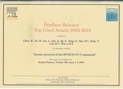

"Two-Dimensional Transitional Metal Dichalcogenides: Interface and Defect Engineering"(Selected as Back Cover Paper)
Hu ZH, Wu ZT, Han C, He J, Ni ZH*, Chen Wei*,Chem. Soc. Rev. 47, 3100-3128 (2018)
DOI: 10.1039/c8cs00024g
"2D Phosphorene: Epitaxial Growth and Interface Engineering for Electronic Devices" (Invited Progress Report, Selected as Frontispiece Paper)
Zhang JL, Han C, Hu ZH, Wang L, Liu L, Wee ATS, Chen Wei*,Adv. Mater. 30, 1802207 (2018)
DOI: 10.1002/adma.201802207
"Single-Atom Catalysts and Their Applications in Organic Chemistry" (Selected as 2018 Hot Papers)
Yan H, Su CL*, He J, Chen Wei*,J. Mater. Chem. A 6, 8793-8814 (2018)
DOI: 10.1039/C8TA01940A
"Two-Dimensional Black Phosphorus: Its Fabrication, Functionalization and Applications"
Hu ZH, Niu TC*, Guo R, Zhang JL, Lai M, He J, Wang L, Chen Wei*,Nanoscale 10, 21575-21063 (2018)
DOI: 10.1039/C8NR07395C
"Defects Chemistry in Discharge Products of Li-O2 Batteries"
Dai WR, Cui XH, Zhou Y, Zhao Y, Wang L, Peng LM*, Chen Wei*,Small Methods 3, 1800358 (2019)
DOI: 10.1002/smtd.201800358
"Recent Advances in Mechanism and Control of Li2O2 Formation in Li-O2 Batteries"
Lyu ZY, Zhou Y, Dai WR, Cui XH, Lai M, Wang L, Huo FW, Huang W, Hu Z*, Chen Wei*,Chem. Soc. Rev. 46, 6046-6072 (2017)
DOI: 10.1039/c7cs00255f
"Towards Single Molecule Switches"
Zhang JL, Zhong JQ, Lin JD, Hu WP, Wu K, Xu GQ, Wee ATS, Chen Wei*, Chem. Soc. Rev. 44, 2998-3022(2015) DOI:
10.1039/C4CS00377B
"Graphene: Promises, Facts, Opportunities, and Challenges in Nanomedicine"
Mao HY, Laurent S, Chen Wei*, Akhavan O, Imani M, and Mahmoudi M*, Chem. Rev. 113, 3407-3424(2013) DOI:
10.1021/cr300335p
"Manipulating the Electronic Properties of Graphene via Molecular Functionalization"
Mao HY, Lu YH, Lin JD, Zhong S, Wee ATS, Chen Wei*, Prog. Surf. Sci. 88, 132-159(2013) DOI:
10.1016/j.progsurf.2013.02.001
"STM studies of epitaxial graphene"
Wong SL, Huang H, Chen Wei, Wee ATS*, MRS Bulletin 37, 1195-1202 (2012) DOI:
10.1557/mrs.2012.204
"The Role of Gap States on the Energy Level Alignment at the Organic Heterojunction Interfaces"
Zhong S, Zhong JQ, Mao HY, Zhang JL, Lin JD, Chen Wei*, Phys. Chem. Chem. Phys. 14, 14127-14141 (2012) DOI:
10.1039/C2CP41107E
"LT-STM Studies of Substrate-Dependent Self-Assembly of Small Organic Molecules"
Huang H*, Wong SL, Chen Wei, Wee ATS*, J. Phys: D. Appl. Phys. 44, 464005 (2011) DOI:
10.1088/0022-3727/44/46/464005
"Synchrotron PES, RPES and NEXAFS studies of self-assembled aromatic thiol monolayers on Au(111)" Chen Wei, Wee ATS*, Electron Spectrosc. Relat. Phenom. 172, 59-63 (2009) DOI:
10.1016/j.elspec.2009.02.015
"Charge Transfer across the Molecule/Metal Interface using the Core Hole Clock Technique"
Wang L, Chen Wei, Wee ATS*, Surf. Sci. Rep. 63, 465-486 (2008) DOI:
10.1016/j.surfrep.2008.06.001
"Self-assembly on Silicon Carbide Nanomesh Templates" Chen Wei, Wee ATS*, J. Phys: D. Appl. Phys. 40, 6287 (2007) DOI:
10.1088/0022-3727/40/20/S13
Full publication list:
2021
"Ohmic Contact Engineering for Two-dimensional Materials"(Invited Review)
Zheng Y, Gao J, Han C*, Chen Wei*, Cell Rep. Phys. Sci.2, 100298 (2021)
DOI: 10.1016/j.xcrp.2020.100298
"Surface Charge Transfer Doping for Two-dimensional Semiconductor-based Electronic and Optoelectronic Devices"(Invited Review)
Wang YN, Zheng Y, Han C*, Chen Wei*, Nano Res.14, 1682–1697 (2021)
DOI: 10.1007/s12274-020-2919-1
"Recent Developments in 2D Transition Metal Dichalcogenides: Phase Transition and Applications of the (Quasi-)Metallic Phases"
Yin XM, Tang CS, Zheng Y, Gao J, Wu J, Zhang H, Chhowalla M, Chen Wei*, Wee ATS*, Chem. Soc. Rev.(Accepted)
"Application of Functionalized Graphene in Li-O2 Batteries"(Invited Review)
Cui XH, Luo YN, Zhou Y, Dong WH*, Chen Wei*, Nanotechnology32, 132003 (2021)
DOI: 10.1088/1361-6528/abd1a7
"Recent Progress in Epitaxial Growth of Two-dimensional Phosphorus"(Invited Review)
Wang YH, Sun S, Zhang JL*, Huang YL*, Chen Wei*, SmartMat(Accepted)
"Efficient Photocatalytic Hydrogen Peroxide Generation Coupled with Selective Benzylamine Oxidation over Defective ZrS3 Nanobelts"
Tian ZL, Han C*, Zhao Y, Dai WR, Lian X, Wang YN, Zheng Y, Shi Y, Pan X, Huang ZC, Li HX, Chen Wei*, Nat. Commun.12, 2039 (2021)
DOI: 10.1038/s41467-021-22394-8
"Electronic Metal–support Interaction Modulates Single-atom Platinum Catalysis for Hydrogen Evolution Reaction"
Shi Y*, Ma ZR, Xiao YY, Yin YC, Huang WH, Huang ZC, Zheng YZ, Mu FY, Huang R, Shi GY, Sun YY, Xia XH*, Chen Wei*, Nat. Commun.12, 3021 (2021)
DOI: 10.1038/s41467-021-23306-6
"Confining Li2O2 in Tortuous Pores of Mesoporous Cathodes to Facilitate Low Charge Overpotentials for Li-O2 Batteries"
Zhou Y, Zhao Y, Liu ZJ, Peng ZQ, Wang L*, Chen Wei*, J. Energy. Chem.55, 55-61 (2021)
DOI: 10.1016/j.jechem.2020.06.063
"Pressure-Dependent Band-Bending in ZnO: A Near-Ambient-Pressure X-ray Photoelectron Spectroscopy Study"
Ma ZR, Lian X, Yuan KD*, Sun S, Gu CD, Zhang JL, Lyu J, Zhong JQ*, Liu L*, Li HX, Chen Wei*, J. Energy. Chem.60, 25-31 (2021)
DOI: 10.1016/j.jechem.2020.12.018
"Intrinsic Polarization Coupling in 2D α-In2Se3 toward Artificial Synapse with Multi-mode Operations"
Gao J, Zheng Y, Yu W, Wang YN, Jin TY, Pan X, Loh KP, Chen Wei*, SmartMat2, 88-98 (2021)
DOI: 10.1002/smm2.1020
"Controlling Phase Transition in WSe2 towards Ideal n-type Transistor"
Zheng Y, Han C, Xiang D*, Zhang JL, Guo R, Wang WH, Liu T, Wang YN, Gao J, Ni ZH, Chen Wei*, Nano Res.(Acccepted)
DOI: 10.1007/s12274-020-3275-x
"From Micropores to Ultra-micropores inside Hard Carbon: Towards Enhanced Capacity in Room/Low-Temperature Sodium-Ion Storage"
Yang JL, Wang XW, Dai WR, Lian X, Li Q, Cui XH, Zhang WC, Zhang KX, Lin M, Zou RQ, Loh KP, Yang Q-H*, Chen Wei*, Nano-Micro Lett.98, 98 (2021)
DOI: 10.1007/s40820-020-00587-y
"Chloride Ion as Redox Mediator in Reducing Charge Overpotential of Aprotic Lithium–Oxygen Batteries"
Zhang Q, Zhou Y, Dai WR, Cui XH, Lyu ZY, Hu Z, Chen Wei*, Batter. Supercaps.4, 232-239 (2021)
DOI: 10.1002/batt.202000198
"Atom by Atom Condensation of Sn Single Clusters within Gold-phosphorus Metal-inorganic Porous Networks"
Zhang JL, Zhao ST, Sun S, Wang W, Ma ZR, Lian X, Li ZY*, Chen Wei*, J. Phys. Chem. Lett.12, 745-751 (2021)
DOI: 10.1021/acs.jpclett.0c03302
"Surface Charge Transfer Doping Enabled Large Hysteresis in van der Waals Heterostructures for Artificial Synapse"
Pan X, Zheng Y, Shi YM*, Chen Wei*, ACS Mater. Lett.3, 235-242 (2021)
DOI: 10.1021/acsmaterialslett.0c00531
"Controlling Native Oxidation of HfS2 for 2D Materials Based Flash Memory and Artificial Synapse"
Jin TY, Zheng Y, Gao J, Wang YN, Li EL, Chen HP, Pan X, Lin M*, Chen Wei*, ACS Appl. Mater. Interfaces13, 10639-10649 (2021)
DOI: 10.1021/acsami.0c22561
"Atomic-Scale Local Work Function Characterizations of Br Islands on Cu(111)"
Huang ZC, Lin YX, Han C*, Sun YY*, Wu K*, Chen Wei*, J. Phys. Chem. C125, 7944-7949 (2021)
DOI: 10.1021/acs.jpcc.1c00524
"Fluorination Guided Li Anchoring Behaviors on Phthalocyanines"
Lian X, Ma ZR, Zhang ZH, Yang JL, Liu Y, Gu CD, Sun S, Ding HH, Hu J, Zhu JF, Li SZ*, Chen Wei*, J. Phys. Chem. C125, 8236-8243 (2021)
DOI: 10.1021/acs.jpcc.1c00831
"Monodispersed Ruthenium Nanoparticles on Nitrogen-Doped Reduced Graphene Oxide for Efficient Lithium-Oxygen Battery"
Dai WR, Liu Y, Wang M, Lin M, Lian X, Luo YN, Yang JL, Chen Wei*, ACS Appl. Mater. Interfaces13, 19915–19926 (2021)
DOI: 10.1021/acsami.0c23125
"Band-tailored van der Waals Heterostructure for Multilevel Memory and Artificial Synapse"
Wang YN, Zheng Y, Gao J, Jin TY, Li EL, Lian X, Pan X, Han C, Chen HP, Chen Wei*, InfoMat(Acccepted)
DOI: 10.1002/inf2.12230
"Atomic and Electronic Edge Structures of Monolayer Ceria on Pt(111)"
Huang ZC, Han C*, Sun Y-Y*, Wu K*, Chen Wei*, J. Phys. Chem. C(Acccepted)
DOI: 10.1016/j.joule.2020.11.010
"Design and Manufacture of 3D-Printed Batteries"
Lyu ZY*, Lim GJH, Koh JJ, Ding J, Wang JL, Hu Z, He CB*, Chen Wei, Chen YF*, Joule5, 89-114 (2021)
DOI: 10.1016/j.joule.2020.11.010
"Differences in Oxidation-reduction Kinetics and Mobility of Cu Species in Fresh and SO2-poisoned Cu-SSZ-13 Catalysts"
Mesilova VV, Bergmana SL, Dahlinb S, Xiao Y, Xi SB, Ma ZR, Lian X, Chen Wei, Pettersson LJ, Bernasek SL*, Appl. Catal. B: Environ.284, 119756 (2021)
DOI: 10.1016/j.apcatb.2020.119756
"Evoking Ordered Vacancies in Metallic Nanostructures toward a Vacated Barlow packing for High-performance Hydrogen Evolution"
Zhang ZC, Liu GG, Cui XY, Gong Y, Yi D, Zhang QH, Zhu CZ, Saleem F, Chen B, Lai ZC, Yuan QB, Cheng HF, Huang ZQ, Peng YW, Fan ZX, Li B, Dai WR, Chen Wei, Du YH, Ma L, Sun CJ, Hwang I, Chen SM, Song L, Ding F, Gu L, Zhu YH, Zhang H*, Sci. Adv.7, eabd6647 (2021)
DOI: 10.1126/sciadv.abd6647
"Two-dimensional Magnetic Transition Metal Chalcogenides"(Invited Review)
Huang YL, Chen Wei, Wee ATS*, SmartMat(Accepted)
DOI: 10.1002/smm2.1031
"Engineering the Coordination Environment of Single Cobalt Atoms for Efficient Oxygen Reduction and Hydrogen Evolution Reactions"
Sun T, Zang WJ, Yan H, Li J, Zhang ZQ, Bu YF, Chen Wei, Wang J*, Lu J*, Su CL*, ACS Catal.11, 4498-4509 (2021)
DOI: 10.1021/acscatal.0c05577
"3D-Assembled rutile TiO2 Spheres with c-channels for Efficient Lithium-ion Storage"
Hao ZK, Tian M, Ren YJ, Dai WR, Wang M, Chen Wei, Xu GQ*, Nanoscale(Accepted)
DOI: 10.1039/d1nr02064a
2020
"Non-covalent Interaction Controlled 2D Organic Semiconductor Films: Molecular Self-Assembly, Electronic and Optical Properties, and Electronic Devices"(Invited Review)
Zhang JL*, Ye X, Gu CD, Han C*, Sun S, Wang L*, Chen Wei*, Surf. Sci. Rep.75, 100481 (2020)
DOI: 10.1016/j.surfrep.2020.100481
"Stimuli-Enabled Artificial Synapses for Neuromorphic Perception: Progress and Perspectives"(Invited Review)
Pan X, Jin TY, Gao J, Han C, Shi YM*, Chen Wei*, Small16, 2001504 (2020)
DOI: 10.1002/smll.202001504
"Designing Kagome Lattice from Potassium Atoms on Phosphorus Gold Surface Alloy"
Sun S, Zhao ST, Luo YZ, Gu XY, Tadich A, Qi DC, Lian X, Ma ZR, Zheng Y, Gu CD, Zhang JL*, Li ZY*, Chen Wei*, Nano Lett.20, 5583-5589 (2020)
DOI: 10.1021/acs.nanolett.0c02426
"Synthesis of Monolayer Blue Phosphorus by Silicon Intercalation"
Zhang JL, Zhao ST, Sun S, Ding HH, Hu J, Li YL, Xu Q, Yu XJ, Telychko M, Su J, Gu CD, Zheng Y, Lian X, Ma ZR, Guo R, Lu J, Sun Z, Zhu JF, Li ZY*, Chen Wei*, ACS Nano14, 3687-3695 (2020)
DOI: 10.1021/acsnano.0c00822
"Optically Controllable 2D Material/Complex Oxide Hetero-Interface"
Liu T, Xiang D*, Han C, Han K, A Ariando, Chen Wei*, Adv. Sci.24, 336-342 (2020)
DOI: 10.1002/advs.202002393
"3D-Printed Electrodes for Lithium Metal Batteries with High Areal Capacity and High-Rate Capability"
Lyu ZY*, Lim GJH, Guo R, Pan ZH, Zhang X, Hang H, He ZM, Adams S, Chen Wei*, Ding J*, Wang J*, Energy Storage Mater.24, 336-342 (2020)
DOI: 10.1016/j.ensm.2019.07.041
"Inorganic-Anion-Modulated Synthesis of 2D Nonlayered Aluminum-based Metal-Organic Frameworks as Carbon Precursor for Capacitive Sodium Ion Storage"
Yang JL, Xiao SN, Cui XH, Dai WR, Lian X, Hao ZK, Zhao Y, Pan JS, Zhou Y, Wang L, Chen Wei*, Energy Storage Mater.26, 391-399 (2020)
DOI: 10.1016/j.ensm.2019.11.010
"On-Surface Synthesis of Nitrogen Substituted Gold-Phosphorus Porous Network"
Zhang JL, Zhao ST, Sun S, Lian X, Tadich A, Qi DC, Gu CD, Ma ZR, Li ZY*, Chen Wei*, Chem. Mater.32, 8561–8566 (2020)
DOI: 10.1021/acs.chemmater.0c02889
"Van der Waals Heterostructures with Tunable Tunneling Behavior Enabled by MoO3 Surface Functionalization"
Wang YN, Xiang D*, Zheng Y, Liu T, Ye X, Gao J, Yang H, Han C, Chen Wei*, Adv. Opt. Mater.8, 1901867 (2020)
DOI: 10.1002/adom.201901867
"Out-of-plane Vertical Homojunction Enabled High Performance SnS2 Lateral Phototransistor"
Gao J, Yang H, Mao HY, Liu T, Zheng Y, Wang YN, Xiang D*, Han C*, Chen Wei*, Adv. Opt. Mater.8, 1901971 (2020)
DOI: 10.1002/adom.201901971
"Alkali Metal Storage Mechanism in Organic Semiconductor of Perylene-3,4,9,10-Tetracarboxylicdianhydride"
Lian X, Ma ZR, Zhang ZH, Yang JL, Liu Y, Gu CD, Guo R, Wang YN, Ye X, Zheng Y, Ding HH, Hu J, Cao X, Mao HY, Zhu JF, Li SZ*, Chen Wei*, Appl. Surf. Sci.524, 146396 (2020)
DOI: 10.1016/j.apsusc.2020.146396
"Potassium Doping Facilitated Formation of Tunable Superoxides in Li2O2 for Improved Electrochemical Kinetics"
Dai WR, Cui XH, Chi X, Zhou Y, Yang JL, Lian X, Zhang Q, Dong WH*, Chen Wei*, ACS Appl. Mater. Interfaces12, 4558-4564 (2020)
DOI: 10.1021/acsami.9b21554
"Molecular-Scale Investigation of the Thermal and Chemical Stability of Monolayer PTCDA on Cu(111) and Cu(110)"
Gu CD, Zhang JL, Sun S, Lian X, Ma ZR, Mao HY, Guo L, Wang YP, Chen Wei*, ACS Appl. Mater. Interfaces12, 22327-22334 (2020)
DOI: 10.1021/acsami.0c02590
"Native Oxide Seeded Spontaneous Integration of Dielectrics on Exfoliated Black Phorsphorous"
Yang H, Xiang D, Mao HY, Liu T, Guo R, Zheng Y, Ye X, Wang YN, Gao J, Ge Q, Deng CY, Cai WW, Zhang XA*, Qin SQ*, Chen Wei*, ACS Appl. Mater. Interfaces12, 24411-24418 (2020)
DOI: 10.1021/acsami.0c01161
"Single-molecule Imaging of Dinitrogen Molecule Adsorption on Individual Iron Phthalocyanine"
Gu CD, Zhang JL*, Zhong JQ, Shen Q, Zhou X, Yuan KD, Sun S, Lian X, Ma ZR, Chen Wei*, Nano Res.13, 2393-2398 (2020)
DOI: 10.1007/s12274-020-2863-0
"Surface Functionalization of Black Phosphorus with a Highly Reducing Organoruthenium Complex: Interface Properties and Enhanced Photoresponsivity of Photodetectors"
Guo R, Zheng Y, Hu ZH, Zhang JL, Han C*, Longhi E, Barlow S, Marder SR, Chen Wei*, Chem. Eur. J.26, 6576 (2020)
DOI: 10.1002/chem.201905173
"Experimental Realization of One-Dimensional Metal-Inorganic Chain: Gold-Phosphorus Chain"(Invited article)
Sun S, Yang T, Ma ZR, Ding HH, Zhao ST, Xu Q, Lian X, Gu CD, Li ZY, Zhu JF, Zhang JL*, Feng YP*, Chen Wei*, ACS Mater. Lett.2, 873-879 (2020)
DOI: 10.1021/acsmaterialslett.0c00233
"An in-situ Spectroscopy Investigation of Alkali Metal Interaction Mechanism with the Imide Functional Group"
Lian X, Ma ZR, Zhang ZH, Yang JL, Sun S, Gu CD, Liu Y, Ding HH, HU J, Cao X, Zhu JF, Li SZ*, Chen Wei*, Nano Res.13, 3224-3229 (2020)
DOI: 10.1007/s12274-020-2991-6
"Construction of Ruthenium-decorated Nitrogen-doped Graphene Aerogel as an Efficient Electrocatalyst for Hydrogen Evolution Reaction"(Invited article)
Shi Y, Dai WR, Wang M, Xing YF, Xia XH*, Chen Wei*, Chem. Res. Chin. Univ.36, 709-714 (2020)
DOI: 10.1007/s40242-020-0167-2
"3D-Printed Grids with Polymeric Photocatalytic System as Flexible Air Filter"
Xu X, Xiao SN, Willy HJ, Xiong T, Borayek R, Chen Wei, Zhang DQ*, Ding J*, Appl. Catal. B: Environ. 262, 118307 (2020)
DOI: 10.1016/j.apcatb.2019.118307
"Ultrasensitive Graphene-Si Position-Sensitive Detector for Motion Tracking"
Wang WH, Liu KY, Jiang J, Du RX, Sun LT, Chen Wei, Lu JP, Ni ZH*, InfoMat2, 761-768 (2020)
DOI: 10.1002/inf2.12081
"In-situ Growth of V-shaped CoSe2 Nanorods on Graphene with C-Co Bonding for High-rate and Long-life Sodium-Ion Batteries"
Xiao YH*, Zhang JY, Su DC, Zhang AQ, Jin QX, Zhou LM, Wu SD*, Wang XZ*, Chen Wei, Fang SM, J. Alloy Compd.819, 153359 (2020)
DOI: 10.1016/j.jallcom.2019.153359
"Structure of Blue Phosphorus Grown on Au(111) Surface Revisited"
Zhao ST, Zhang JL, Chen Wei, Li ZY*, J. Phys. Chem. C124, 2024–2029 (2020)
DOI: 10.1021/acs.jpcc.9b10511
"Oxygen-Deficient Blue TiO2 for Ultrastable and Fast Lithium Storage"
Hao ZK, Chen Q, Dai WR, Ren YJ, Zhou Y, Yang JL, Xie SJ, Shen YB, Wu JH, Chen Wei, Xu GQ*, Adv. Energy. Mater.10, 1903107 (2020)
DOI: 10.1002/aenm.201903107
"Probing the Reaction Mechanism in CO2 Hydrogenation on Bimetallic Ni/Cu(100) with Near-Ambient Pressure X-Ray Photoelectron Spectroscopy"
Ren YJ, Xin CY, Hao ZK, Sun HC, Bernasek SL, Chen Wei, Xu GQ*, ACS Appl. Mater. Interfaces12, 2548-2554 (2020)
DOI: 10.1021/acsami.9b19523
"A Nanosheet Array of Cu2Se Intercalation Compound with Expanded Interlayer Space for Sodium Ion Storage"
Xiao YH, Zhao XB, Wang XZ, Sun CG, Zhou LM, Wu SD, Fang SM*, Chen Wei, Cheng H-M, Li F*, Adv. Energy. Mater.10, 2000666 (2020)
DOI: 10.1002/aenm.2000666
"Solid-Phase Microwave Reduction of WO3 by GO for Enhanced Synergistic Photo-Fenton Catalytic Degradation of Bisphenol A"
Xiao SN*, Ye XY, Lian ZC, Zhang NY, Yang JH, Chen Wei, Li HX*, ACS Appl. Mater. Interfaces12, 32604-32614 (2020)
DOI: 10.1021/acsami.0c06373
2019
"Fused Computing and Storage in 2D Transistor"(News & Views)
Xiang D, Liu T, Chen Wei*, Nat. Nanotechnol. 14, 642-643 (2019)
DOI: 10.1038/s41565-019-0476-0
"Defects Chemistry in Discharge Products of Li-O2 Batteries"(Selected as Cover)
Dai WR, Cui XH, Zhou Y, Zhao Y, Wang L, Peng LM*, Chen Wei*,Small Methods 3, 1800358 (2019) DOI: 10.1002/smtd.201800358
"Reversible Oxidation of Blue Phosphorus Monolayer on Au(111)"
Zhang JL, Zhao ST, Mykola T, Sun S, Lian X, Su J, Anton T, Qi DC, Zhuang JC, Zheng Y, Ma ZR, Gu CD, Hu ZH, Du Y, Lu J, Li ZY, Chen Wei*, Nano Lett. 19, 5340-5346 (2019)
DOI: 10.1021/acs.nanolett.9b01796
"Degenerate Electron-Doping in Two-dimensional Tungsten Diselenide with a Dimeric Organometallic Reductant"
Guo R, Li Q, Zheng Y, Lei B, Sun HC, Hu ZH, Zhang JL, Wang L, Longhi E, Barlow S, Marder SR, Wang JL*, Chen Wei*, Mater. Today. 30, 26-33 (2019)
DOI: 10.1016/j.mattod.2019.04.017
"Anomalous Broadband Spectrum Photodetection in Rhenium Disulfide Transistor"(Selected as Inside Cover)
Xiang D, Liu T*, Wang JY, Wang P, Wang L, Zheng Y, Wang YN, Gao J, Ang KW, Eda G, Hu WD, Liu L, Chen Wei*,
Adv. Optical. Mater. 7, 1901115 (2019)
DOI: 10.1002/adom.201901115
"3D-Printed MOF-Derived Hierarchically Porous Frameworks for Practical High-Energy Density Li–O2 Batteries"
Lyu ZY, Lim GJH, Guo R, Kou ZK, Wang TT, Guan C, Ding J*, Chen Wei*, Wang J*, Adv. Funct. Mater. 29, 1805568 (2019) DOI:
10.1002/adfm.201806658
"Microwave‐Induced Metal Dissolution Synthesis of Core–Shell Copper Nanowires/ZnS for Visible Light Photocatalytic H2 Evolution"(Selected as Inside Back Cover)
Xiao SN, Dai WR, Liu XY, Pan DL, Zou HJ, Zhang GQ, Li GS, Su CL*, Zhang DQ*, Chen Wei*, Li HX*,Adv. Energy. Mater. 9, 1805568 (2019)
DOI: 10.1002/aenm.201900775
"Black Phosphorus Invertor Devices Enabled by in-situ Aluminum Surface Modification"
Zheng Y, Hu ZH, Han C, Guo R, Xiang D, Lei B, Wang YN, He J, Lai M, Chen Wei*,Nano Res. 12, 531–536 (2019)
DOI: 10.1007/s12274-018-2246-y
"Nondestructive Hole Doping Enabled Photocurrent Enhancement of Layered Tungsten Diselenide"
Lei B, Zheng Y, Hu ZH, Guo R, Xiang D, Liu T, Wang YN, Lai M, He J, Chen Wei*,2D Mater. 6, 024002 (2019)
DOI: 10.1088/2053-1583/ab0708
"Polysulfide-Driven Low Charge Overpotential for Aprotic Lithium-Oxygen Batteries"
Zhou Y, Lyu ZY, Dai WR, Liu ZJ, Guo R, Yang JL, Cui XH, Lin M, Lai M, Peng ZQ*, Chen Wei*, J. Mater. Chem. A 7, 8777-8784 (2019)
DOI: 10.1039/C9TA00267G
"Promoting Defective-Li2O2 Formation via Na Doping for Li-O2 Batteries with Low Charge Overpotential"
Lyu ZY, Wang T, Guo R, Chen JC, Zhou Y, Wang X, Lin M, Tian XX, Lai M, Peng LM, Wang L, Chen Wei*, J. Mater. Chem. A 7, 10389-10396 (2019)
DOI: 10.1039/C9TA01606F
"Surface Passivation of Black Phosphorus via van der Waals Stacked PTCDA"
Guo R, Zheng Y, Ma ZR, Lian X, Sun HC, Han C*, Ding HH, Xu Qian, Yu XJ, Zhu JF*, Chen Wei*, Appl. Sur. Sci. 496, 143688 (2019)
DOI: 10.1016/j.apsusc.2019.143688
"Uniform Mesoporous Anatase Hollow Spheres: An Unexpectedly Efficient Fabrication Process and Enhanced Performance in Photocatalytic Hydrogen Evolution"
Zhao YB*, Chen QF, Pan F, Li H, Xu GQ, Chen Wei*,Chem. Eur. J. 25, 10965-10970 (2019)
DOI: 10.1002/chem.201400120
"Highly Crystalline K-Intercalated Polymeric Carbon Nitride for Visible-Light Photocatalytic Alkenes and Alkynes Deuterations"
Qiu CT, Xu YS, Fan X, Xu D, Tandiana R, Ling X, Jiang YN, Liu CB, Yu L, Chen Wei, Su CL*, Adv. Sci. 6, 1801403 (2019)
DOI: 10.1002/advs.201801403
"Defect Chemistry in 2D Materials for Electrocatalysis"
Sun T, Zhang GQ, Xu D, Lian X, Li HX, Chen Wei, Su CL*, Mater. Today Energy 12, 215-238 (2019)
DOI: 10.1016/j.mtener.2019.01.004
"Stable, Carrier Separation Tailorable Conjugated Microporous Polymers as a Platform for Highly Efficient Photocatalytic H2 Evolution"
Zhang G, Ou W, Wang J, Xu Y, Xu D, Sun T, Xiao S, Wang M, Li H, Chen Wei, Su C*, Appl. Catal. B: Environ. 245, 114-121 (2019)
DOI: 10.1016/j.apcatb.2018.12.007
"Efficient Synergism of Electrocatalysis and Physical Confinement Leading to Durable High-power Lithium-Sulfur Batteries"
Du LY, Wu Q, Yang LJ, Wang X, Che RC, Lyu ZY, Chen Wei, Wang XZ, Hu Z*, Nano Energy 57, 34-40 (2019)
DOI: 10.1016/j.nanoen.2018.12.019
"In situ Spectroscopy-Guided Engineering of Rhodium Single-Atom Catalysts for CO Oxidation"
Hülsey M, Zhang B, Ma ZR, Asakura H, Do D, Chen Wei, Tanaka T, Zhang P, Wu ZL, Yan N*, Nat. Comm. 10, 1330 (2019)
DOI: 10.1038/s41467-019-09188-9
"Effective Hydrogenation of g-C3N4 for Enhanced Photocatalytic Performance Revealed by Molecular Structure Dynamics"
Gong Y, Li HK, Jiao C, Xu XY, Zhang XM, Liu YF, Liu XY, Chen Wei, Liu L, Zhan D*, Appl. Catal. B: Environ. 250, 63-70 (2019)
DOI: 10.1016/j.apcatb.2019.03.001
"Gas-Phase Photoelectrocatalysis for Breaking Down Nitric Oxide"
Xiao SN, Wan Z, Zhou JC, Li H, Zhang HQ, Su CL, Chen Wei, Li GS, Zhang DQ*, Li HX*, Environ. Sci. Technol. 53, 7145-7154 (2019)
DOI: 10.1021/acs.est.9b00986
"Evidence of Spin Frustration in a Vanadium Diselenide Monolayer Magnet"
Wong PKJ, Zhang W, Bussolotti F, Yin XM, Herng TS, Zhang L, Huang YL, Vinai G, Krishnamurthi S, Bukhvalov DW, Zheng YJ, Chua R, N’Diaye AT, Morton SA, Yang CY, Yang KHO, Torelli P, Chen Wei, Goh KEJ, Ding J,
Lin
MT, Brocks G, de Jong MP*, Castro Neto AH*, Wee ATS*, Adv. Mater. 31, 1901185 (2019)
DOI: 10.1002/adma.201901185
"Highly Stable Two-Dimensional Hybrid Organic–Inorganic Tin(II) Iodide Perovskite Based on Stilbene Derivative"
Park IH, Chu LQ, Leng K, Choy YF, Liu W, Abdelwahab I, Zhu ZY, Ma ZR, Chen Wei, Xu QH, Eda G, Loh KP*, Adv. Funct. Mater. 29, 1904819 (2019)
DOI: 10.1002/adfm.201904810
"Wafer-Scale and Deterministic Patterned Growth of Monolayer MoS2 via Vapor–Liquid–Solid Method"
Li SS*, Lin YC, Liu XY, Hu ZH, Wu J, Nakajima H, Liu S, Okazaki T, Chen Wei ,Xu QH, Eda G, Loh KP*, Nanoscale 11, 16122-16129 (2019)
DOI: 10.1039/c9nr04612g
"An Investigation on the Relationship between the Stability of Lithium Anode and Lithium Nitrate in Electrolyte"
Yu LH, Song JJ, Wang LY, Ong SJH, Gu CD, Liao HB, Wang T, Chen Wei, Lev O, Xu ZCJ*, Adv. Funct. Mater. 29, 1904819 (2019)
DOI: 10.1149/2.0151915jes
"Optimizing Interfacial Electronic Coupling with Metal Oxide to Activate Inert Polyaniline for Superior Electrocatalytic Hydrogen Generation"
Huang ZF, Song JJ, Du YH, Dou S, Sun LB, Chen Wei, Yuan KD, Dai ZF, Wang X*, Carbon Energy 1, 77-84 (2019)
DOI: 10.1002/cey2.3
"Graphene-Based Infrared Position-Sensitive Detector for Precise Measurements and High-Speed Trajectory Tracking"
Liu KY, Wang WH, Yu YF, Hou XY, Liu YP, Chen Wei, Wang XM, Lu JP*, Ni ZH*, Nano Lett. 19, 8132-8137 (2019) DOI:
10.1021/acs.nanolett.9b03368
"Metallic 1T Phase, 3d(1) Electronic Configuration and Charge Density Wave Order in Molecular Beam Epitaxy Grown Monolayer Vanadium Ditelluride"
Wong PKJ, Zhang W, Zhou J, Bussolotti F, Yin XM, Zhang L, N’Diaye AT, Morton SA, Herng TS, Zhang L, Chen Wei, Goh KEJ*, de Jong MP, Feng YP, Wee ATS*, ACS Nano 13,
12894-12900 (2019) DOI: 10.1021/acsnano.9b05349
"Uniform and Ultrathin High-κ Gate Dielectrics for Two-dimensional Electronic Devices"
Li WS, Zhou J, Cai SH, Yu ZH, Zhang JL, Fang N, Li TT, Chen TS, Xie XY, Ma HB, Yan K, Dai NX, Wu XJ, Zhao HJ, Wang ZX, He DW, Pan LJ, Shi Y, Wang P, Chen Wei, Nagashio K, Duan XF, Wang XR*, Nat. Electron. 2, 563-571 (2019) DOI: 10.1038/s41928-019-0334-y
2018
"Two-Dimensional Transitional Metal Dichalcogenides: Interface and Defect Engineering"(Selected as Back Cover Paper)
Hu ZH, Wu ZT, Han C, He J, Ni ZH*, Chen Wei*,Chem. Soc. Rev. 47, 3100-3128 (2018)
DOI: 10.1039/c8cs00024g
"2D Phosphorene: Epitaxial Growth and Interface Engineering for Electronic Devices" (Invited Progress Report, Selected as Frontispiece Paper)
Zhang JL, Han C, Hu ZH, Wang L, Liu L, Wee ATS, Chen Wei*,Adv. Mater. 30, 1802207 (2018)
DOI: 10.1002/adma.201802207
"Single-Atom Catalysts and Their Applications in Organic Chemistry" (Selected as 2018 Hot Papers)
Yan H, Su CL*, He J, Chen Wei*,J. Mater. Chem. A 6, 8793-8814 (2018)
DOI: 10.1039/C8TA01940A
"Two-Dimensional Black Phosphorus: Fabrication, Functionalization and Application"
Hu ZH, Niu TC*, Guo R, Zhang JL, Lai M, He J, Wang L, Chen Wei*,Nanoscale 10, 21575-21063 (2018)
DOI: 10.1039/C8NR07395C
"Two-dimensional Multi-bit Optoelectronic Memory with Broadband Spectrum Distinction"
Xiang D, Liu T, Xu JL, Tan JY, Hu ZH, Lei B, Zheng Y, Wu J, Castro Neto AH, Liu L, Chen Wei*, Nat. Commun. 9, 2966 (2018) DOI:
10.1038/s41467-018-05397-w
"Abnormal Near-infrared Absorption in two-dimensional Black Phosphorus Induced by Ag Nanoclusters Surface Functionalization" (Selected as Frontispiece Paper)
Hu ZH, Li Q, Lei B, Wu J, Zhou QH, Gu CD, Wen XL, Wang JY, Liu YP, Li SS, Zheng Y, Lu JP, He J, Wang L, Xiong QH, Wang JL*, Chen Wei*,Adv. Mater. 30, 1801931 (2018)
DOI: 10.1002/adma.201801931
"Non-volatile and Programmable Photodoping in MoTe2 for Photoresist-free Complementary Electronic Devices"
Liu T, Xiang D*, Zheng Y, Wang YN, Wang XY, Wang L, He J, Liu L, Chen Wei*, Adv. Mater. 30, 1804470 (2018) DOI:
10.1002/adma.201804470
"Direct Observation of Semiconductor-Metal Phase Transition in Bilayer Tungsten Diselenide Induced by Potassium Surface Functionalization"
Lei B, Pan YY, Hu ZH, Xiang D, Zheng Y, Guo R, Han C, Wang LH, Lu J, Yang L*, Chen Wei*, ACS Nano 12, 2070-2077 (2018) DOI:
10.1021/acsnano.8b00398
"Bimetal MOF Derived Mesocrystal ZnCo2O4 on rGO with High Performance in Visible-light Photocatalytic NO Oxidization"
Xiao SN, Pan DL, Liang R, Dai WR, Zhang QT, Zhang GQ, Su CL*, Li HX*, Chen Wei*, Appl. Catal. B: Environ. 236, 304-313 (2018) DOI:
10.1016/j.apcatb.2018.05.033
"Unraveling Charge State of Supported Au Single-atoms during CO Oxidation"
Zhou X, Shen Q, Yuan KD, Yang WS, Chen QW, Geng ZH, Zhang JL, Shao X*, Chen Wei*, Xu GQ, Yang XM*, J. Am. Chem. Soc. 140, 554-557 (2018) DOI:
10.1021/jacs.7b10394
"Temperature and Phase-dependent Phonon Renormalization in 1T’-MoS2"
Tan S, Sarkar S, Zhao XX, Luo X, Luo YZ, Poh SM, Abdelwahab I, Zhou W, Venkatesan T, Chen Wei*, Quek SY*, Loh KP*, ACS Nano 12, 5051-5058 (2018) DOI:
10.1021/acsnano.8b02649
"Atomically Dispersed Ni(I) as the Active Site for Electrochemical CO2 Reduction"
Yang HB, Hung SF, Liu S, Yuan KD, Miao S, Zhang LP, Huang X, Wang HS, Cai WZ, Chen R, Gao JJ, Yang XF, Chen Wei, Huang YQ, Chen HM, Li CM, Zhang T*, Liu B*, Nat. Energy 3, 140-147 (2018)
DOI: 10.1038/s41560-017-0078-8
"Vapor-Liquid-Solid Growth of Monolayer MoS2 Nanoribbons"
Li SS*, Lin YC, Zhao W, Wu J, Wang Z, Hu ZH, Shen YD, Tang DM, Wang JY, Zhang Q, Zhu H, Chu LQ, Zhao WJ, Liu C, Sun ZP, Taniguchi T, Osada M, Chen Wei, Xu QH, Wee ATS, Suenaga K, Ding F, Edo G*, Nat.
Mater.
17, 535-542 (2018) DOI: 10.1038/s41563-018-0055-z
"Atomic Engineering of High-Density Isolated Co Atoms on Graphene with Proximal-Atom Controlled Reaction Selectivity"
Yan H, Zhao XX, Guo N, Lyu ZY, Du YH, Xi SB, Guo R, Chen C, Chen ZX, Liu W, Yao CH, Li J, Pennycook S, Chen Wei, Su CL*, Zhang C*, Lu J*, Nat. Comm. 9, 3197 (2018) DOI:
10.1038/s41467-018-05754-9
"Quasi-monolayer Black Phosphorus with High Mobility and Air Stability"
Tan SJR, Abdelwahab I, Chu LQ, Poh SM, Liu YP, Lu J, Chen Wei, Loh KP*, Adv. Mater. 30, 1801891 (2018) DOI:
10.1002/adma.201704619
"Free-Standing 2D Hexagonal Aluminum Nitride Dielectric Crystals for High-Performance Organic Field-Effect Transistors"
Yang FX, Jin L, Sun LJ, Ren XC, Duan XL, Cheng HJ, Xu YK, Zhang XT*, Lai ZP, Chen Wei, Dong HL, Hu WP*, Adv. Mater. 30, 1801891 (2018) DOI:
10.1002/adma.201801891
"Emergence of Photoluminescence on Bulk MoS2 by Laser Thinning and Gold Particle Decoration"
Gong LL, Zhang Q, Wang LJ, Han C, Lei B, Chen Wei, Eda G, Goh KEJ, Sow CH*, Nano Res. 11, 4574-4586 (2018) DOI:
10.1007/s12274-018-2037-5
"Orthorhombic Ti2O3 Thin Films: Discovery of a New Binary-Oxide Superconductor"
Li YY, Weng YK, Zhang JJ, Ding JF, Zhu YH, Wang QX, Yang Y, Cheng YC, Zhang Q, Li P, Lin JD, Chen Wei, Han Y, Zhang XX, Chen L, Dong S*, Chen XH, Wu T*, NPG Asia Mater. 10, 522-532 (2018)
DOI: 10.1038/s41427-018-0050-5
"B, N Co-doped and Defect-rich Nanocarbon Material as a Metal-free Bifunctional Electrocatalyst for Oxygen Reduction and Evolution Reactions"
Sun T, Wang J, Qiu CT, Ling X, Tian BB, Chen Wei, Su CL*, Adv. Sci. 5, 201800036 (2018) DOI: 10.1002/advs.201800036
"Dipole and Charge Effects of Chloroaluminum Phthalocyanine Revealed by Local Work Function Measurements at Sub-Molecular Level"
Song HJ, Li N, Zhu H, Peng ZT, Zhao WH, Chen HR, Chen Wei, Wang YF*, Wu K*, Chin. Chem. Lett. 29, 429-432 (2018) DOI:
10.1016/j.cclet.2017.07.013
"Bromine Adatom Promoted C–H Bond Activation in Terminal Alkynes at Room Temperature on Ag(111)"
Liu J, Chen QW, He QL, Zhang YJ, Fu XY, Wang YF*, Zhao DH*, Chen Wei, Xu GQ, Wu K*, Phys. Chem. Chem. Phys. 20, 11081-11088 (2018) DOI:
10.1039/c7cp07972a
"Engineering the Electronic Structure of MoS2 Nanorods by N and Mn Dopants for Ultra-Efficient Hydrogen Production"
Sun T, Wang J, Chi X, Lin YX, Chen ZX, Ling X, Qiu CT, Xu YS, Song L, Chen Wei, Su CL*, ACS Catal. 8, 7585-7592 (2018) DOI:
10.1021/acscatal.8b00783
"Selective Reduction of CO2 by Conductive MOF Nanosheets as an Efficient Co-Catalyst under Visible Light Illumination"
Zhu W, Zhang CF, Li Q, Xiong LK, Chen RX, Wan XB, Wang Z, Chen Wei, Deng Z*, Peng Y*, Appl. Catal. B: Environ. 238, 339-345 (2018) DOI:
10.1016/j.apcatb.2018.07.024
"Unveiling the Role of Defects on Oxygen Activation and Photodegradation of Organic Pollutants"
Xu M, Chen Y, Qin J, Feng Y, Li W, Chen Wei, Zhu J, Li H*, Bian Z*, Environ. Sci. Technol. 52, 13879-13886 (2018) DOI:
10.1021/acs.est.8b03558
"Catalytic Intermediates of CO2 Hydrogenation on Cu(111) Probed by In Operando Near‐Ambient Pressure Technique"
Ren YJ, Yuan KD, Zhou X, Sun HC, Wu K, Bernasak SL, Chen Wei, Xu GQ*, Chem. Eur. J. 24, 16097-16103 (2018) DOI:
10.1002/chem.201802931
"Stable, Carrier Separation Tailorable Conjugated Microporous Polymers as a Platform for Highly Efficient Photocatalytic H2 Evolution"
Zhang G, Ou W, Wang J, Xu Y, Xu D, Sun T, Xiao S, Wang M, Li H, Chen Wei, Su C*, Appl. Catal. B: Environ. 245, 114-121 (2018) DOI:
10.1016/j.apcatb.2018.12.007
2017
"Recent Advances in Mechanism and Control of Li2O2 Formation in Li-O2 Batteries"
Lyu ZY, Zhou Y, Dai WR, Cui XH, Lai M, Wang L, Huo FW, Huang W, Hu Z*, Chen Wei*,Chem. Soc. Rev. 46, 6046-6072 (2017)
DOI: 10.1039/c7cs00255f
"Water-Catalyzed Oxidation of Few-Layer Black Phosphorous in Dark Environment"
Hu ZH, Li Q, Lei B, Zhou QH, Xiang D, Lyu ZY, Hu F, Wang JL, Ren YJ, Guo R, Goki E, Wang L, Han C*, Wang JL*, Chen Wei*,Angew. Chem. Int. Ed. 56, 9131-9137 (2017)
DOI: 10.1002/anie.201705012
"Surface Functionalization of Black Phosphorus via Potassium towards High Performance Complementary Devices"
Han C, Hu ZH, C. Gromes L, Bao Y, Carvalho A, Tan SJR, Lei B, Xiang D, Wu J, Wang L, Huo FW, Huang W, Loh KP, Chen Wei*, Nano Lett. 17, 4122-4129 (2017) DOI:
10.1021/acs.nanolett.7b00903
"Effect of Oxygen Adsorbability on the Control of Li2O2 Growth in Li-O2 Batteries: Implications for Cathode Catalyst Design"
Lyu ZY, Yang LJ, Luan YP, Wang XR, Wang LJ, Hu ZH, Lu JP, Xiao SN, Zhang F, Wang XZ, Huo FW, Huang W, Hu Z*, Chen Wei*, Nano Energy 36, 68-75 (2017) DOI:
10.1016/j.nanoen.2017.04.022
"Growth of Quasi-Free-Standing Single Layer Blue Phosphorus on Tellurium Monolayer Functionalized Au(111)"
Gu CD, Zhao ST, Zhang JL, Sun S, Yuan KD, Hu ZH, Han C, Ma ZR, Wang L, Huo FW, Huang W, Li ZY*, Chen Wei*, ACS Nano 11, 4943–4949 (2017) DOI:
10.1021/acsnano.7b01575
"Reactive Intermediates or Inert Graphene? Temperature and Pressure Determined Carbon Evolution in the CH4 – Ni(111) System"
Yuan KD, Zhong JQ, Sun S, Ren YJ, Zhang JL, Chen Wei*, ACS Catal. 7, 6028-6037 (2017) DOI:
10.1021/acscatal.7b01880
"Oxygen Induced Strong Mobility Modulation in Few-layer Black Phosphorus"
Han C, Hu ZH, Carvalho A, Guo N, Zhang JL, Hu F, Xiang D, Wu J, Lei B, Wang L, Zhang C, Castro-Neto AH, Chen Wei*, 2D Mater. 4, 021007 (2017) DOI:
10.1088/2053-1583/aa59ce
"Largely Enhanced Optoelectronic Performance of Tungsten Diselenide Phototransistor via Surface Functionalization"
Lei B, Hu ZH, Xiang D, Wang JY, Han C*, Chen Wei*, Nano Res. 10, 1281-1291 (2017) DOI: 10.1007/s12274-016-1386-1
"Thermally Stable Ir/Ce0.9La0.1O2 Catalyst for High Temperature Methane Dry Reforming Reaction"
Wang FG*, Xu LL, Shi WL, Zhang J, Wu K, Zhao Y, Li H, Li HX, Xu GQ*, Chen Wei*, Nano Res. 10, 364-380 (2017) DOI:
10.1007/s12274-016-1296-2
"Probing the Effect of the Pt-Ni-Pt(111) Bimetallic Surface Electronic Structures on the Ammonia Decomposition Reaction"
Zhong JQ*, Zhou X, Yuan KD, Wright C, Tadich A, Qi DC, Li HX, Wu K, Xu GQ, Chen Wei*, Nanoscale 9, 666-672 (2017) DOI:
10.1039/c6nr08311k
"Synthesis of Porous CoMoO4 Nanorods as a Bifunctional Cathode Catalyst for Li-O2 Battery and Anode for Li-Ion Battery"
Wang LJ, Cui XH, Gong LL, Lyu ZY, Zhou Y, Dong WH, Liu J, Lai M, Huo FW, Huang W, Lin M, Chen Wei*, Nanoscale 9, 3898-3904 (2017) DOI:
10.1039/c7nr00178a
"Epitaxial Growth of Phosphorus Nanostripe Arrays on Cu(110)"
Zhang JL, Zhao ST, Sun S, Niu TC, Zhou X, Gu CD, Han C, Yuan KD, Guo R, Li ZY*, Chen Wei*, Adv. Mater. Interfaces 4, 1601167 (2017) DOI:
10.1002/admi.201601167
"Ruthenium Functionalized Hierarchical Carbon Nanocages as Efficient Catalyst for Li-O2 Batteries"
Wang LJ, Lyu ZY, Gong LL, Zhang J, Wu Q, Wang XZ, Huo FW, Huang W, Hu Z*, Chen Wei*, ChemNanoMat 3, 415-419 (2017) DOI:
10.1002/cnma.201700023
"Surfactant-Free Synthesis of Hierarchical Niobic Acid Microflowers Assembled from Ultrathin Nanosheets with Efficient Photoactivities"
Dong WH, Pan F*, Wang YY, Xiao SN, Wu K, Xu GQ, Chen Wei*, Appl. Surf. Sci. 392, 514-522 (2017) DOI:
10.1016/j.apsusc.2016.09.085
"Enhanced Catalytic Performance of Ir Catalysts Supported on Ceria-Based Solid Solutions for Methane Dry Reforming Reaction"
Wang FG*, Yang J, Xu LL, Zhang LZ, Zhang J, Zhao Y, Li H, Li HX, Wu K, Xu GQ*, Chen Wei*, Catal. Today 281, 295-303 (2017) DOI:
10.1016/j.cattod.2016.03.055
"LT-STM Investigation of the Self-Assembled F16CuPc-Corannulene Binary System on Ag(111) and Graphite"
Guo R, Zhang JL, Zhao ST, Yu XJ, Zhong S, Sun S, Li ZY, Chen Wei*, Acta Phys. -Chim. Sin. 33, 627-632 (2017) DOI:
10.3866/pku.whxb201612051
"Co3O4 functionalized Porous Carbon Nanotube Oxygen- Cathode to Promote Li2O2 Surface Growth for Improved Cycling Stability in Li-O2 Batteries"
Zhou Y, Lyu ZY, Wang LJ, Dong WH, Dai WR, Cui XH, Hao ZK, Lai M, Chen Wei*, J. Mater. Chem. A 5, 22501-22508 (2017) DOI:
10.1039/c7ta09932k
"Monodispersed Ru Nanoparticles Functionalized Graphene Nanosheets as Efficient Cathode Catalysts for O2-Assisted Li–CO2 Battery"
Wang LJ, Dai WR, Ma LP, Gong LL, Lyu ZY, Zhou Y, Liu J, Lin M, Lai M, Peng ZQ*, Chen Wei*, ACS Omega 2, 9280–9286 (2017) DOI:
10.1021/acsomega.7b01495
"Electron Transport and Visible Light Absorption in A Plasmonic Photocatalyst based on Strontium Niobate"
Wan DY, Zhao YL, Cai Y, Asmara T, Huang Z, Chen JQ, Hong JD, Yin SM, Nelson C, Motapothula MR, Yan BX, Xiang D, Chi X, Zheng HM, Chen Wei, Xu R, Ariando, Rusydi A, Minor A, Breese MBH, Sherburne M, Asta M, Xu QH,
Venkatesan T, Nat. Commun. 8, 15070 (2017) DOI: 10.1038/ncomms15070
"Pinning-down molecules in their self-assemblies with multiple weak hydrogen bonds of C-H ·· ·F and C-H ·· ·N"
Jin X, Cramer JR, Chen QW, Liang HL, Shang J, Shao X, Chen Wei, Xu GQ, Gothelf KV*, Wu K*, Chin. Chem. Lett. 28, 525-530 (2017) DOI:
10.1016/j.cclet.2016.11.007
"Shuttling Mechanism of Chlorine Atom Through the Pc Plane in a Chloroaluminum Phthalocyanine-Based Molecular Switch"
Song HJ, Fu CF, Li N, Zhu H, Peng ZT, Zhao WH, Dai JX, Xing LB, Huang ZC, Chen Wei, Wang YF*, Yang JL*, Wu K*, Phys. Chem. Chem. Phys. 19, 22401-22405 (2017) DOI:
10.1039/c7cp03153j
"Tunable Fluorescence Properties Due to Carbon Incorporation in Zinc Oxide Nanowires"
Lim KY, Linghu JJ, Chi X, Yuan KD, Hew KM, Zheng MR, Yang M, Tok ES, Rusydi A, Yu XJ, Chen Wei, Feng YP*, Sow CH*, Adv. Opt. Mater. 5, 1700381 (2017) DOI:
10.1002/adom.201700381
"Electronic Properties of a 1D Intrinsic/p-Doped Heterojunction in a 2D Transition Metal Dichalcogenide Semiconductor"
Song ZB, Schultz T, Ding ZJ, Lei B, han C, Amsalem P, Lin TT, Chi DZ, Wong SL, Zheng YJ, Li MY, Li LJ, Chen Wei, Koch N*, Huang YL*, Wee ATS*, ACS Nano 11, 9128-9135 (2017) DOI: 10.1021/acsnano.7b03953
"Steering Surface Reaction Dynamics with Self-Assembly Strategy"
Zhou X, Wang CG, Zhang YJ, Cheng F, He Y, Shen Q, Shang J, Shao X*, Ji W*, Chen Wei, Xu GQ, Wu K*, Angew. Chem. Int. Ed. 56, 12852-12856 (2017) DOI:
10.1002/anie.201705018
"Fabrication and Properties of a Free-Standing Two-Dimensional Titania"
Wang SL, Luo X, Zhou X, Zhou Y, Chi X, Chen Wei, Wu K, Liu Z, Quek SY*, Xu GQ*, J. Am. Chem. Soc. 139, 15414-15419 (2017) DOI:
10.1021/jacs.7b08229
"Fabry-Perot Cavity-Enhanced Optical Absorption in Ultrasensitive Tunable Photodiodes Based on Hybrid 2D Materials"
Wang QX, Guo J, Ding ZJ, Qi DY, Jiang JZ, Wang Z, Chen Wei, Xiang YJ, Zhang WJ*, Wee ATS*, Nano Lett. 17, 7593-7598 (2017) DOI:
10.1021/acs.nanolett.7b03579
"Two-Dimensional C/TiO2 Heterogeneous Hybrid for Noble-Metal-Free Hydrogen Evolution"
Wang SL, Li J, Wang SJ, Wu JE, Wong TI, Foo ML, Chen Wei, Wu K, Xu GQ*, ACS Catal. 7, 6892-6900 (2017) DOI:
10.1021/acscatal.7b02331
"Atomic Mechanism for the Growth of Wafer-Scale Single-Crystal Graphene: Theoretical Perspective and Scanning Tunneling Microscopy Investigations"
Niu TC*, Zhang JL, Chen Wei, Xu GQ, Wu K*, 2D Mater. 4, 042002 (2017) DOI: 10.1088/2053-1583/aa868f
"Reducing the Schottky Barrier between Few-layer MoTe2 and Gold"
Qi DY, Wang QX, Han C, Jiang JZ, Zheng YJ, Chen Wei, Zhang WJ, Wee ATS*, 2D Mater. 4, 045016 (2017) DOI:
10.1088/2053-1583/aa89fc
"On-Surface Synthesis Approach to Preparing One-Dimensional Organometallic and Poly-P-Phenylene Chains"
Zhou X, Bebensee F, Shen Q, Bebensee R, Cheng F, He Y, Su H, Chen Wei, Xu GQ, Besenbacher F, Linderoth TR*, Wu K*, Mater. Chem. Front. 1, 119-127 (2017) DOI:
10.1039/c6qm00142d
"Morphological Evolution of In2O3 Crystallites by Metallothermal Reaction Growth: A Unified Elucidation"
Shang J, Huang B, Yu JF, Wang Y, Song HJ, Dai JX, Chen C, Zheng LJ, Ye ZX, Cheng JH, Li JL, Chen Wei, Xu GQ, Teo BK*, Wu K*, J. Cluster Sci. 28, 2733-2751 (2017) DOI:
10.1007/s10876-017-1244-7
2016
"Epitaxial Growth of Single Layer Blue Phosphorene: A New Phase of Two-Dimensional Phosphorus"
Zhang JL, Zhao ST, Han C, Wang ZZ, Zhong S, Sun S, Guo R, Zhou X, Gu CD, Yuan KD, Li ZY*, Chen Wei*, Nano Lett.16, 4903-4908 (2016) DOI:
10.1021/acs.nanolett.6b01459
"Dynamic Oxygen on Surface: Catalytic Intermediate and Coking Barrier in the Modeled CO2 Reforming of CH4 on Ni(111)"
Yuan KD, Zhong JQ, Zhou X, Xu LL, Bergman S, Wu K, Xu GQ, Bernasek S, Li HX, Chen Wei*, ACS Catal. 6, 4430-4439 (2016) DOI:
10.1021/acscatal.6b00357
"Porous CuO Nanotubes/Graphene with Sandwich Architecture as High-performance Anodes for Lithium-ion Batteries"
Xiao SN, Pan DL, Wang LJ, Zhang ZZ, Lyu ZY, Dong WH, Chn XL, Zhang HQ, Zhang DQ*, Chen Wei*, Lu JP, Li HX*, Nanoscale8, 19343-19351 (2016)
DOI: 10.1039/C6NR07802H
"Facile synthesis of flower-like hierarchical Ni2CoO4 microspheres as high-performance cathode material for Li-O2 batteries"
Wang LJ, ZhuT, Lyu ZY, Zhang J, Gong LL, Xiao SN, Liu J, Dong WH, Cui XH, Ho GW, Chen Wei*, RSC Adv.6, 98867-98873 (2016) DOI:
10.1039/c6ra21414b
"Facile synthesis of hierarchical porous Co3O4 nanoboxes as the efficient cathode catalysts for Li-O2 batteries"
Zhang J, Lyu ZY, Zhang F, Wang LJ, Xiao P, Yuan KD, Lai M, Chen Wei*, J. Mater. Chem. A4, 98867-98873 (2016) DOI:
10.1039/C6TA01995A
"CoS2 nanoparticles–graphene hybrid as cathodes catalysts for aprotic Li-O2 batteries"
Lyu ZY, Zhang J, Wang LJ, Yuan KD, Luan YP, Xiao P, Chen Wei*, RSC Adv.6, 31739-31743 (2016) DOI:
10.1039/C6RA00723F
"Recyclable Silver-Decorated Magnetic Titania Nanocomposite with Enhanced Visible-Light Photocatalytic Activity"
Wang YY, Pan F, Dong WH, Xu LL, Wu K, Xu GQ, Chen Wei*, Appl. Catal. B: Environ.189, 192-198 (2016) DOI:
10.1016/j.apcatb.2016.02.057
"Tuning the metal-support interaction in catalysts for highly efficient methane dry reforming reaction"
Wang FG*, Xu LL, Zhang J, Zhao U, Li H, Li HX, Wu K, Xu GQ*, Chen Wei*, Appl. Catal. B: Environ.180, 511-520 (2016) DOI:
10.1016/j.apcatb.2015.07.001
"CNTs Threaded (001) Exposed TiO2 with High Activity in Photocatalytic NO Oxidation"
Xiao SN, Zhu W, Liu PJ, Zhang DQ*, Chen Wei*, Li HX*, Nanoscale8, 2899-2907 (2016) DOI: 10.1039/c5nr07589k
"(2,2'-Binaphthyl-6,6'-diyl)bis(diphenylphosphine Oxide) as a Potentially Simple and Efficient Electron-Transport Layer for Stable Organic Light-Emitting Diodes"
Tan WY, Gao DY, Zhong S, hang J, Zou JH, Zhu XH*, Chen Wei*, Peng JB*, Cao Y, Org. Electron.28, 269-274 (2016) DOI:
10.1016/j.orgel.2015.11.002
"Novel Air Stable Organic Radical Semiconductor of Dimers of Dithienothiophene, Single Crystals, and Field-Effect Transistors"
Zhang HT, Dong HL, Yi Y, Jiang W, Zhen YG, Jiang L, Wang ZH, Chen Wei, Wittmann A, Hu WP*, Adv. Mater.28, 269-274 (2016) DOI:
10.1002/adma.201601502
"A General Method for Growing Two-Dimensional Crystals of Organic Semiconductors by "'Solution Epitaxy'"
Xu CH, He P, Liu J, Cui AJ, Dong HL, Zhen YG, Chen Wei, Hu WP*, Angew. Chem. Int. Ed.55, 9518-9522 (2016) DOI:
10.1002/anie.201602781
"Photocatalytic Properties of Pd/TiO2 Nanosheets for Hydrogen Evolution from Water Splitting"
Wu JJ, Lu SL, Ge DH, Zhang LZ, Chen Wei, Gu HW*, RSC Adv.6, 67502-67508 (2016) DOI: 10.1039/C6RA10408H
"CO2 Methanation over a Ni based Ordered Mesoporous Catalyst for the Production of Synthetic Natural Gas"
Xu LL*，Wang FG, Chen MD*, Zhang J, Yuan KD，Wang LJ，Wu K, Xu GQ, Chen Wei, Gu HW*, RSC Adv.6, 67502-67508 (2016) DOI:
10.1039/C6RA01139J
"Stabilizing Surface Ag Adatoms into Tunable Single Atom Arrays by Terminal Alkyne Assembly"
Liu J, Fu XY, Chen QW, Zhang YJ, Wang YF, Zhao DH, Chen Wei, Xu GQ, Liao PL*, Wu K*, Chem. Commun.52, 12944-12947 (2016) DOI:
10.1039/C6CC06444B
"Adsorption-enhanced Spin-Orbit Coupling of Buckled Honeycomb Silicon"
Sun JT*, Chen Wei, Sakamoto K, Feng YP, Wee ATS, Physica E Low Dimens. Syst. Nanostruct.83, 141-145 (2016) DOI:
10.1016/j.physe.2016.04.022
"Organic Cocrystal Photovoltaic Behavior: A Model System to Study Charge Recombination of C-60 and C-70 at the Molecular Level"
Zhang HT, Jiang L, Zhen YG, Zhang J, Han GC, Zhang XT, Fu XL, Yi YP, Xu W, Dong HL, Chen Wei, Hu WP*, Zhu DB, Adv. Electron. Mater.2, 1500423 (2016) DOI: 10.1002/aelm.201500423
"Sacrificial-Template-Assisted Syntheses of Aluminate and Titanate Nanonets via Interfacial Reaction Growth"
Shang J, Yu JF, Wang Y, Jiang MJ, Huang YN, Yang DH, Tang X, Gao C, Li JL, Chen Wei, Xu GQ, Teo BK*, Wu K*, J. Clust. Sci.27, 139-153 (2016) DOI: 10.1007/s10876-015-0916-4
"Anomalous Photoresponse in the Deep-Ultraviolet due to Resonant Excitonic Effects in Oxygen Plasma Treated Few-Layer Graphene"
Singh RA*, Li DH, Xiong QH, Santosa I, Yu XJ, Chen Wei, Rusydi A*, Wee ATS*, Carbon6, 139-153 (2016) DOI:
10.1016/j.carbon.2016.05.026
"Stable Pt Single Atoms and Nanoclusters on Ultrathin CuO Film and Their Performances in CO Oxidation"
Zhou X, Yang WS, Chen QW, Geng ZH, Shao X*, Li JL, Wang YF, Dao DX, Chen Wei, Xu GQ, Yang XM*, Wu K*, J. Phys. Chem. C.120, 1709-1715 (2016) DOI: 10.1021/acs.jpcc.5b11362
"Molecular Nanocorrals on Si(111)-(7x7): Temperature-Dependent Site Selectivity"
Mao W, He JH, Xi YJ, Chen Wei, Wu K, Zhang C, Tok ES, Xu GQ*, J. Phys. Chem. C.120, 24780-24788 (2016) DOI:
10.1021/acs.jpcc.6b07477
"Visible–Near-Infrared-Light-Driven Oxygen Evolution Reaction with Noble-Metal-Free WO2–WO3 Hybrid Nanorods"
Wang SL, Mak YL, Wang SJ, Chai JW, Pan F, Foo ML, Chen Wei, Wu K, Xu GQ*, Langmuir32, 13046-13053 (2016) DOI:
10.1021/acs.langmuir.6b03594
2015
"Surface Transfer Doping Induced Effective Modulation on Ambipolar Characteristics of Few-layer Black Phosphorus"
Xiang D, Han C, Wu J, Zhong S, Liu YY, Lin JD, Zhang XA, Hu WP, Özyilmaz B, Castro Neto AH, Wee ATS, Chen Wei*, Nat. Commun.6, 6485 (2015) DOI: 10.1038/ncomms7485
"Towards Single Molecule Switches"(Invited Review Article)
Zhang JL, Zhong JQ, Lin JD, Hu WP, Wu K, Xu GQ, Wee ATS, Chen Wei*, Chem. Soc. Rev.44, 2998-3022 (2015) DOI:
10.1039/C4CS00377B
"Molecular Orientation and Electronic Structure at Organic Heterojunction Interfaces"(Invited Review Article)
Zhong S, Zhong JQ, Wee ATS, Chen Wei*, J. Electron Spectrosc. Relat. Phenom.7, 4306-4324 (2015) DOI:
10.1016/j.elspec.2015.02.014
"Single Molecule Imaging of Activated Nitrogen Adsorption on Individual Manganese Phthalocyanine"
Zhang JL, Wang ZZ, Zhong JQ, Yuan KD, Shen Q, Xu LL, Niu TC, Gu CD, Wright C, Tadich A, Qi DC, He Li HX, Wu K, Xu GQ, Li ZY*, Chen Wei*, Nano Lett.15, 3181–3188 (2015) DOI: 10.1021/acs.nanolett.5b00290
"Reversible Tuning of Interfacial and Intra-Molecular Charge Transfer in Individual MnPc Molecules"
Zhong JQ*, Wang ZZ, Zhang JL, Wright CA, Yuan KD, Gu CD, Tadich A, Qi DC, Li HX, Lai M, Wu K, Xu GQ, Hu WP, Li ZY*, Chen Wei*, Nano Lett.15, 8091-8098 (2015) DOI: 10.1021/acs.nanolett.5b03520
"Porous Cobalt-Manganese Oxide Nanocubes Derived from Metal Organic Frameworks as Cathode Catalysts for Rechargeable Li-O2 Batteries"
Zhang J, Wang LJ, Xu LL, Zhao X, Lai M, Liu ZL*, Chen Wei*, Nanoscale7, 720-726 (2015) DOI:
10.1039/C4NR05865H
"Optimized Growth of Graphene on SiC: From the Dynamic Flip Mechanism"
Wang DD, Liu L*, Chen Wei*, Chen XB, Huang H, He J, Feng YP, Wee ATS, Shen DZ, Nanoscale7, 4522-4528 (2015) DOI:
10.1039/C4NR07197B
"Synthesis of Hierarchical Porous δ-MnO2 Nanoboxes as an Efficient Catalyst for Rechargeable Li–O2 Batteries"
Zhang J, Luan YP, Lyu ZY, Wang LJ, Xu LL, Yuan KD, Pan F, Lai M, Liu ZL*, Chen Wei*, Nanoscale7, 14881-14888 (2015) DOI:
10.1039/C5NR02983J
"Surface Transfer Doping Induced High Performance Graphene/Silicon Schottky Junction Based Self-Powered Photodetector"
Xiang D, Han C, Hu ZH, Lei B, Liu YY, Wang L*, Hu WP*, Chen Wei*, Small11, 4829-4836 (2015) DOI:
10.1002/smll.201501298
"Self-Assembled Two-Dimensional Nanoporous Molecular Arrays and Photoinduced Polymerization of 4-Bromo-4'-Hydroxybiphenyl on Ag(111)"
Shen Q, He JH, Zhang JL, Wu K, Xu GQ, Wee ATS, Chen Wei*, J. Chem. Phys.142, 101902 (2015) DOI:
10.1063/1.4906116
"Tuning the Electronic Properties of ZnO Nanowire Field Effect Transistors via Surface Functionalization"
Han C, Xiang D, Zheng MR, Lin JD, Zhong JQ, Sow CH, Chen Wei*, Nanotechnology26, 095202 (2015) DOI:
10.1088/0957-4484/26/9/095202
"Evolution of the SrTiO3/MoO3 Interface Electronic Structure: An in Situ Photoelectron Spectroscopy Study"
Du YM, Peng HY, Mao HY, Jin KX, Wang H, Li F, Gao XY, Chen Wei*, Wu T*, ACS Appl. Mater. Interfaces7, 11309-11314 (2015) DOI:
10.1021/acsami.5b01698
"Ultrathin PtPdCu Nanowires fused Porous Architecture with 3D Molecular Accessibility: an Active and Durable Platform for Methanol Oxidation"
Zhao X*, Zhang J, Wang LJ, Li HX, Liu ZL*, Chen Wei*, ACS Appl. Mater. Interfaces7, 26333-26339 (2015) DOI:
10.1021/acsami.5b09357
"Facile Synthesis of CdS@TiO2 Core-Shell Nanorods with Controllable Shell Thickness and Enhanced Photocatalytic Activity under Visible Light Irradiation"
Dong WH, Pan F*, Xu LL, Zheng MR, Sow CH, Wu K, Xu GQ, Chen Wei*, Appl. Surf. Sci.349, 279-286 (2015) DOI:
10.1016/j.apsusc.2015.04.207
"One-step Synthesis of Ordered Mesoporous CoAl2O4 Spinel based Metal Oxides for CO2 Reforming of CH4"
Xu LL， Zhang J，Wang FG, Yuan KD， Wang LJ，Wu K, Xu GQ, Chen Wei*, RSC Adv.5, 48256-48268 (2015) DOI:
10.1039/C5RA07249B
"Aqueous Metal Oxide Inks for Modifying Electrode Work Function in Polymer Solar Cells"
Tan MJ, Chen Wei*, Chellappan V*, Adv. Mater. Interfaces2, 1500438 (2015) DOI: 10.1002/admi.201500438
"Perylene Bisimide as the Cathode Modifier in Organic Photovoltaics: the Role of Aggregation Morphology on the Interlayer Performance"
Zhang WQ, Zhong S, Nian L, Chen YL, Xie ZQ*, Liu LL, Hanif M, Chen Wei*, Ma YG, RSC Adv.5, 39973-39977 (2015) DOI:
10.1039/C5RA03988F
"Palladium Nanoparticles Functionalized Graphene Nanosheets for Li-O2 Batteries: Enhanced Capacity by Tailoring the Morphology of Discharge Product"
Wang LJ, Zhang J, Zhao X, Xu LL, Lai M, Chen Wei*, RSC Adv.5, 73451-73456 (2015) DOI: 10.1039/C5RA11312A
"Black Phosphorus Quantum Dots"
Zhang X, Xie HM, Liu ZD, Tan CL, Luo ZM, Li H, Lin JD, Sun LQ, Chen Wei, Xu ZC, Xie LH, Huang W, Zhang H*, Angew. Chem. Int. Ed.54, 3653-3657 (2015) DOI: 10.1002/ange.201409400
"Low Temperature Critical Growth of High Quality Nitrogen Doped Graphene on Dielectrics by Plasma-Enhanced Chemical Vapor Deposition"
Wei DC*, Peng L, Li M, Mao H, Niu TC, Han C, Chen Wei, Wee ATS, ACS Nano9, 164-171 (2015) DOI:
10.1021/nn505214f
"Lattice-Directed Formation of Covalent and Organometallic Molecular Wires by Terminal Alkynes on Ag Surfaces"
Liu J, Chen QW, Xiao LH, Shang J, Zhou X, Zhang YJ, Wang YF*, Shao X, Li JL, Chen Wei, Xu GQ, Tang H, Zhao DH*, Wu K*, ACS Nano9, 6305-6314 (2015) DOI: 10.1021/acsnano.5b01803
"Colossal Ultraviolet Photoresponsivity of Phosphorene"
Jing Wu, Gavin Kok Wai Koon, Du Xiang, Chee Tat Toh, Cheng Han, Ivan Verzhbitskiy, Alexandra Carvalho, Aleksandr S. Rodin, Steven P. Koenig, Goki Eda, Chen Wei, A. H. Castro Neto, Barbaros Ӧzyilmaz*, ACS
Nano9, 8070-8077 (2015) DOI: 10.1021/acsnano.5b01922
"Anomalous Spectral Features of a Neutral Bilayer Graphene"
Cheng CM, Xie LF, Pachoud A, Moser HO7, Chen Wei, Wee ATS, Castro Neto AH, Tsuei KD, Özyilmaz B*, Sci. Rep.5, 10025 (2015) DOI:
10.1038/srep10025
"Unveiling Structural Evolution of CO Adsorption on Ru(0001) with High-Resolution STM"
Chen QW, Liu J, Zhou X, Shang J, Zhang YJ, Shao X, Wang YF, Li JL, Chen Wei, Xu GQ, Wu K*, J. Phys. Chem. C.119, 8626-8633 (2015) DOI: 10.1021/jp5117432
"Photocurrent Response in Multiwalled Carbon Nanotube Core-Molybdenum Disulfide Shell Heterostructures"
Gong LL, Wang LJ, Lu JP, Han C, Chen Wei, Sow CH*, J. Phys. Chem. C.119, 24588–24596 (2015) DOI:
10.1021/acs.jpcc.5b06609
"Tunable Room-temperature Ferromagnet using an Ironoxide and Graphene Oxide Nanocomposite"
Lin AL*, Rodrigues JNB*, Su CL, Milletari M, Loh KP, Wu T, Chen Wei, Castro Neto AH, Adam S, Wee ATS, Sci. Rep.5, 11430 (2015) DOI:
10.1038/srep11430
"Device Performance of the Mott Insulator LaVO 3 as a Photovoltaic Material"
Wang LF, Li YF, Bera A, Ma C, Jin F, Yuan KD, Yin WJ, David A, Chen Wei, Wu WB, Prellier W, Wei SH, Wu T*, Phys. Rev. Applied3, 064015 (2015) DOI: 10.1103/PhysRevApplied.3.064015
"Thin Film Field-effect Transistors of 2,6-diphenyl Anthracene (DPA)"
Liu J, Dong HL, Ji DY, Chen CL, Geng H, Zhang HT, Zhen YG, Jiang L, Fu HB, Bo ZS, Chen Wei, Shuai ZG, Hu WP*, Chem. Commun.51, 11777-11779 (2015) DOI: 10.1039/C4CC10348C
"Preservation of Epoxy Groups on Surfaces in Covalent Attachment of Butadiene Monoxide on Si (111)-(7×7): Effect of Vinyl Substituent"
Mao W, He JH, Gu JQ, Chen Wei, Wu K, Tok ES, Xu GQ*, Chem. Commun.51, 14195-14198 (2015) DOI:
10.1039/C5CC04713G
"Low-Temperature Scanning Tunneling Microscopy Study on Electronic Properties of Double-Decker DyPc2 Molecule at Surface"
Zhang YJ, Liao PL, Kan JL, Yin C, Liu J, Chen QW, Wang YF*, Chen Wei, Xu GQ, Jiang JZ*, Berndt R, Wu K*, Phys. Chem. Chem. Phys.17, 27019-27026 (2015) DOI: 10.1039/C5CC04713G
"A Review on Phosphide based Material for Electrocatalytic Hydrogen Evolution"
Xiao P, Chen Wei, Wang X*, Adv. Energy Mater.2, 1500985 (2015) DOI: 10.1002/aenm.201500985
2014
"Elementary Process for CVD Graphene on Cu(110): Size-selective Carbon Clusters"
Zhang JL, Wang ZZ, Niu TC, Li ZY*, Chen Wei*, Sci. Rep.4, 4431 (2014) DOI: 10.1038/srep04431
"Gap States Assisted MoO3 Nanobelt Photodetector with Wide Spectrum Response"
Xiang D, Han C, Zhang JL, Chen Wei*, Sci. Rep.4, 4891 (2014) DOI: 10.1038/srep04891
"Porous Perovskite LaNiO3 Nanocubes as Cathode Catalyst for Li-O2 Batteries with Low Charge Potential"
Zhang J, Zhao X, Zhao YB, Liu ZL*, Chen Wei*, Sci. Rep.4, 6005 (2014) DOI: 10.1038/srep06005
"Electron-Doping-Enhanced Trion Formation in Monolayer Molybdenum Disulfide Functionalized with Cesium Carbonate"
Lin JD, Han C, Wang F, Xiang D, Qin SQ, Zhang XA*, Wang L, Zhang H, Wee ATS, Chen Wei*, ACS Nano8, 5323-5329 (2014) DOI:
10.1021/nn501580c
"Reversible Switching of Single Dipole Molecule Imbedded in Two Dimensional Hydrogen-bonded Binary Molecular Networks"
Zhang JL, Xu JL, Niu TC, Lu YH, Liu L*, Chen Wei*, J. Phys. Chem. C.118, 1712-1718 (2014) DOI:
10.1021/jp408890k
"Molecular Ordering and Dipole Alignment of Nonplanar Phthalocyanine Monolayer on Metals: the Effects of Interfacial"
Niu TC, Zhang JL, Chen Wei*, J. Phys. Chem. C.118, 4151-4159 (2014) DOI: 10.1021/jp4101653
"Titania-Photocatalyzed Transfer Hydrogenation Reactions with Methanol as Hydrogen Source: Enhanced Catalytic Performance by Pd-Pt Alloy at Ambient Temperature"
Zhao YB, Pan F, Li H, Xu GQ, Chen Wei*, ChemCatChem6, 454-458 (2014) DOI: 10.1002/cctc.201300905
"Using Ultra-high Molecular Weight Hydrophilic Polymer as Cathode Interlayer for Inverted Polymer Solar Cells: Enhanced Efficiency and Excellent Air-stability"
Cai P, Zhong S, Xu XF, Chen JW*, Chen Wei*, Huang F, M YG, Cao Y, Sol. Energy Mater. Sol. Cells123, 104-111 (2014) DOI:
10.1016/j.solmat.2014.01.009
"Single Molecule Tunneling Spectroscopy Investigation of Reversibly Switched Dipolar VOPc on Graphite"
Zhang JL, Wang ZZ, Niu TC, Li ZY*, Chen Wei*, Appl. Phys. Lett.104, 113506 (2014) DOI: 10.1063/1.4869115
"ZnO: Polymer Composite Material to Eliminate Kink in J-V Curves of Inverted Polymer Solar Cells"
Tan MJ, Wang R, Zhong S, Seah KY, Li J, Chen ZK, Chellappan V*, Chen Wei*, ECS Solid State Lett.3, Q9-Q12 (2014) DOI:
10.1149/2.006403ssl
"Significant Roles of Mesostructure and Basic Modifier for Ordered Mesoporous Ni/CaO-Al2O3 Catalyst toward CO2 Reforming of CH4"
Xu LL*, Miao ZH, Song HL, Chen Wei*, Chou LJ*, Catal. Sci. Technol.4, 1759-1770 (2014) DOI:
10.1039/C3CY01037F
"PdxCu100-x Networks: an Active and Durable Electrocatalyst for Ethanol Oxidation in Alkaline Medium"
Zhao X, Zhang J, Wang LJ, Liu ZL*, Chen Wei*, J. Mater. Chem. A2, 20933-20938 (2014) DOI:
10.1039/C4TA04899G
"Lending Triarylphosphine Oxide to Phenanthroline: a Facile Approach to High-Performance Organic Small-Molecule Cathode Interfacial Material for Organic Photovoltaics Utilizing Air-Stable Cathodes"
Tan WY, Wang R, Li M, Liu G, Chen P, Li XC, Lu SM, Zhu HL, Peng QM, Zhu XH*, Chen Wei*, Choy CH*, Li F*, Peng JB, Cao Y, Adv. Funct. Mater.24, 6540-6547 (2014) DOI: 10.1002/adfm.201401685
"Synthesis of {100} Facets Dominant Anatase TiO2 Nanobelts and the Origin of Facet Dependent Photoreactivity"
Pan F*, Wu K, Li HX*, Xu GQ*, Chen Wei*, Chem. Eur. J.20, 15095-15101 (2014) DOI:
10.1002/chem.201403866
"Enhancement of the Photocatalytic Efficiency of WO3 Nanoparticles via Hydrogen Plasma Treatment"
Rahimnejad S, He JH, Pan F, Li XE, Chen Wei*, Wu K*, Xu GQ*, Mater. Res. Express1, 045044 (2014) DOI:
10.1088/2053-1591/1/4/045044
"High Performance Vertical Tunneling Diodes using Graphene/h-BN/Graphene Hetero-structure"
Lee SH, Choi MS, Liu X, Lee J, Ra CH, Choi J, Zhong JQ, Chen Wei, Yoo WJ*, Appl. Phys. Lett.104, 053103 (2014) DOI:
10.1063/1.4863840
"Tunable Optical Absorption and Interactions in Graphene via Oxygen Plasma"
Santoso I, Singh RS, Gogoi PK, Asmara TC, We DC, Chen Wei, Wee ATS, Pereira VM, Rusydiet A*, Phys. Rev. B89, 075134 (2014) DOI: 10.1103/PhysRevB.89.075134
"Growth of Millimeter-Size Single Crystal Graphene on Cu Foils by Circumfluence Chemical Vapor Deposition"
Wang CC, Chen W, Han C, Wang G, Tang BB, Tang CX, Wang Y, Zou WN, Chen Wei, Zhang XA*, Qin SQ, Chang SL, Wang L*, Sci. Rep.4, 4534 (2014) DOI: 10.1038/srep04537
"On the Origin of the Energy Level Alignment at Organic/Organic Interface: the Effects of Inert Gas Exposure"
Wang Bussolotti F*, Yang JP, Hinderhofer A, Huang YL, Chen Wei, Kera S, Wee ATS, Ueno N*, Phys. Rev. B89, 115319 (2014) DOI: 10.1103/PhysRevB.89.115319
"Room Temperature Magnetic Graphene Oxide- Iron Oxide Nanocomposite Based Magnetoresistive Random Access Memory Devices Via Spin-Dependent Trapping of Electrons"
Lin AL, Peng HY, Liu ZQ, Wu T, Su CL, Loh KP, Ariando, Chen Wei, Wee ATS*, Small10, 1945-1952 (2014) DOI:
10.1002/smll.201302986
"Mildly O2 Plasma Treated CVD Graphene: a Promising Platform for Molecular Sensing"
Mao HY*, Wang R, Zhong JQ, Zhong S, Chen Wei, Carbon76, 212-219 (2014) DOI: 10.1002/smll.201302986
"Improved Photoelectrical Properties of MoS2 Films after Laser Micromachining"
Lu JP, LU JH, Liu HW, Liu B, Chan KXH, Lin JD, Chen Wei, Loh KP, Sow CH*, ACS Nano8, 6334-6343 (2014) DOI:
10.1021/nn501821z
"Role of Metal Contacts in High-Performance Phototransistors Based on WSe2 Monolayers"
Zhang WJ, Chiu MH, Chen CH, Chen Wei, Li L-J*, Wee ATS*, ACS Nano8, 8653-8661 (2014) DOI: 10.1021/nn503521c
"Ultrathin MnO2 Nanoflakes as an Efficient Catalyst for Oxygen Reduction Reaction"
Wei C, Yu LH, Cui C, Lin JD, Chen Wei, Mathews N, Huo FW, Sritharan T, Xu ZC*, Chem. Commun.50, 7885-7888 (2014) DOI:
10.1039/C4CC02781G
"Resolving Molecular Orbitals Self-decoupled from Semiconductor Surfaces"
He JH, Mao W, Chen Wei, Wu K, Cheng HS, Xu GQ*, Chem. Sci.5, 4447-4452 (2014) DOI: 10.1039/C4SC01293C
"Acid-Resistant Catalysis without Use of Noble Metals: Carbon Nitride with Underlying Nickel"
Fu T, Wang M, Cai WM, Cui YM, Fao F, Peng LM, Chen Wei, Ding WP*, ACS Catal.4, 2536-2543 (2014) DOI:
10.1021/cs500523k
"Manipulating Individual Dichlorotin Phthalocyanine Molecules on Cu(100) Surface at Room Temperature by Scanning Tunneling Microscopy"
Li C, Xiang FF, Wang ZP, Liu XQ, Jiang DF, Wang G, Zhang XA, Chen Wei, Wang L*, Mater. Res. Express.1, 045101 (2014) DOI: 1088/2053-1591/1/4/045101
"Bandgap Controlling of Oxygen-Vacancy-Induced Two-Dimensional Electron Gas in SrTiO3"
Liu ZQ, Lu WL, Zeng SW, Deng JW, Huang Z, Li CJ, Motapothula M, Lu WM, Zhong JQ, Yang P, Bao NN, Chen Wei, Chen JS, Feng YP, Coey JMD, Venkatesan T, and Ariando*, Adv. Mater. Interfaces1,
1400155 (2014) DOI: 10.1002/admi.201400155
"Optical and Electronic Structure of Quasi-freestanding Multilayer Graphene on the Carbon Face of SiC"
Santoso I, Wong SL, Yin XM, Gogoi PK, Asmara TC, Huang H, Chen Wei, Wee ATS, Rusydi A*, EPL108, 37009 (2014) DOI:
10.1209/0295-5075/108/37009
"Tuning Photocatalytic Properties of WO3 nanocrystals by Varying Transition Metal Tungstate Precursors"
Rahimnejad S, He JH, Chen Wei, Wu K, Xu GQ, RSC Adv.4, 62423-62429 (2014) DOI: 10.1039/C4RA10650D
2013
"Low-Temperature Synthesis of Graphene via a Radical-Coupling Reaction"(Highlighted by JACS Spotlights)
Jiang L, Niu TC, Lu XQ, Dong HL, Chen Wei*, Liu YQ, Hu WP*, Zhu DB, J. Am. Chem. Soc.135, 9050-9054 (2013) DOI:
10.1021/ja4031825
"Growth Intermediates for CVD Graphene on Cu(111): Carbon Clusters and Defective Graphene"
Niu TC, Zhou M, Zhang JL, Feng YP, Chen Wei*, J. Am. Chem. Soc.135, 8409-8414 (2013) DOI: 10.1021/ja403583s
"Graphene: Promises, Facts, Opportunities, and Challenges in Nanomedicine"(Invited Review Article)
Mao HY, Laurent S, Chen Wei*, Akhavan O, Imani M, and Mahmoudi M*, Chem. Rev.113, 3407-3424 (2013) DOI:
10.1021/cr300335p
"Manipulating the Electronic Properties of Graphene via Molecular Functionalization"(Invited Review Article)
Mao HY, Lu YH, Lin JD, Zhong S, Wee ATS, Chen Wei*, Prog. Surf. Sci.88, 132-159 (2013) DOI:
10.1016/j.progsurf.2013.02.001
"Modulating Electronic Transport Properties of MoS2 Field Effect Transistor by Surface Overlayers"
Lin JD, Zhong JQ, Zhong S, Li H, Zhang H, Chen Wei*, Appl. Phys. Lett.103, 063109 (2013) DOI: 10.1063/1.4818463
"Biopolymer as an Electron Selective Layer for Inverted Polymer Solar Cells"
Tan MJ, Zhong S, Wang R, Zhang ZX, Chellappan V*, Chen Wei*, Appl. Phys. Lett.103, 063303 (2013) DOI:
10.1063/1.4817931
"Improving Chemical Vapor Deposition Graphene Conductivity using MoO3: an in-situ Field-Effect-Transistor Study"
Han C, Lin JD, Xiang D, Wang CC, Wang L*, Chen Wei*, Appl. Phys. Lett.103, 263117 (2013) DOI: 10.1063/1.4860418
"Air-stable Efficient Inverted Polymer Solar Cells using Solution-processed Nanocrystalline ZnO Interfacial Layer"
Tan MJ, Zhong S, Li J, Chen ZK*, Chen Wei*, ACS Appl. Mater. Interfaces5, 4696-4701 (2013) DOI: 10.1021/am303004r
"Dipole Orientation Dependent Symmetry Reduction of Chloroaluminum Phthalocyanine on Cu(111)"
Niu TC, Zhou M, Zhang JL, Feng YP, Chen Wei*, J. Phys. Chem. C117, 1013-1019 (2013) DOI: 10.1021/jp310196k
"Uniform Mesoporous Anatase–Brookite Biphase TiO2 Hollow Spheres with High Crystallinity via Ostwald Ripening"
Zhao YB, Li H, Pan F, Niu TC, Xu GQ, Chen Wei*, J. Phys. Chem. C117, 21718-21723 (2013) DOI: 10.1021/jp408322g
"Self-Assembly of Polar Phthalocyanine Molecules on Graphene Grown by Chemical Vapor Deposition"
Ogawa Y, Niu TC, Wong SL, Tsuji M, Wee ATS, Chen Wei*, Ago H*, J. Phys. Chem. C117, 21849-21855 (2013) DOI:
10.1021/jp406681j
"A High Work Function Anode Interfacial Layer via Mild Temperature Thermal Decomposition of C60F36 Thin Film on ITO"
Mao HY, Wang R, Zhong JQ, Zhong S, Lin JD, Wang XZ, Chen ZK, Chen Wei*, J. Mater. Chem. C1, 1491-1499 (2013) DOI:
10.1039/C2TC00110A
"Facile Synthesis of Uniform α-Fe2O3 Crystals and the Facet-dependent Catalytic Performance in Photo-Fenton Reaction"
Zhao YB, Pan F, Li H, Niu TC, Xu GQ, Chen Wei*, J. Mater. Chem. A1, 7242-7246 (2013) DOI: 10.1039/C3TA10966F
"Mesoporous CeO2 Nanobelts Synthesized by a Facile Hydrothermal Route via Controlling Cationic Type and Concentration of Alkali"
Rao RC, Yang M, Ling Q, Zhang QY, Liu HD, Zhang AM*, Chen Wei*, Micropor. Mesopor. Mat.169, 81-87 (2013) DOI:
10.1016/j.micromeso.2012.10.021
"Interface Investigation of the Alcohol-/Water-Soluble Conjugated Polymer PFN as the Cathode Interfacial Layer in Organic Solar Cells"
Zhong S, Mao HY, He ZC, Wu HB, Chen Wei*, Cao Y, J. Appl. Phys.114, 113709 (2013) DOI: 10.1063/1.4821223
"Controllable Unzipping for Intramolecular Junctions of Graphene Nanoribbons and Single-walled Carbon Nanotubes"
Wei DC, Xie LF, Lee KK, Hu ZB, Tan SH, Chen Wei*, Sow CH, Chen KQ, Liu YQ, Wee ATS, Nat. Commun.4, 1374 (2013) DOI:
10.1038/ncomms2366
"Critical Crystal Growth of Graphene on Dielectrics at Low Temperature for Electrical Devices"
Wei DC*, Han C, Niu TC, Lu YH, Chen Wei, Wee ATS*, Angew. Chem. Int. Ed.125, 14371-14376 (2013) DOI:
10.1002/anie.201306086
"Tuning the Dirac Point in CVD-Grown Graphene through Solution Processed n-Type Doping with 2-(2-Methoxyphenyl)-1,3-dimethyl-2,3-dihydro-1H-benzoimidazole"
Wei P, Liu N, Lee HR, AdijantoE, Ci LJ, Naab BD, Zhong JQ, Park J, Chen Wei, Cui Y, Bao ZN*, Nano. Lett.125, 1890-1897 (2013) DOI:
10.1021/nl303410g
"Experimental Reorganization Energies of Pentacene and Perfluoropentacene: Effects of Perfluorination"
Kera S, Hosoumi S, Sato K, Fukagawa H, Nagamatsu S, Sakamoto Y, Suzuki T, Huang H, Chen Wei, Wee ATS, Coropceanu V,Ueno N, J. Phys. Chem. C117, 22428-22437 (2013) DOI: 10.1021/jp4032089
"Band Gap Tunable N-Type Molecules for Organic Field Effect Transistors"
Glowatzki H, Sonar P, Singh SP, Mak AM, Sullivan MB, Chen Wei, Wee ATS, Dodabalapur A, J. Phys. Chem. C117, 11530-11539 (2013) DOI:
10.1021/jp311092s
"Impact of Molecule-dipole Orientation on Energy Level Alignment at the Submolecular Scale"
Huang YL, Chen Wei, Niu TC, Bussolotti F, Huang H, Wee ATS, Ueno N, Kera S, Phys. Rev. B87, 085205 (2013) DOI:
10.1103/PhysRevB.87.085205
"Room Temperature Positive Magnetoresistance via Charge Trapping in Polyaniline-iron Oxide Nanoparticle Composites"
Lin AL, Wu T, Chen Wei, Wee ATS*, Appl. Phys. Lett.103, 032408 (2013) DOI: 10.1063/1.4815998
"Hard Corona Composition and Cellular Toxicities of the Graphene Sheets"
Mao HY, Chen Wei, Laurent S, Burtea C, Thirifays C, Mahmoudi M*, Colloids Surf. B Biointerfaces109, 212-218 (2013) DOI: 10.1016/j.colsurfb.2013.03.049
2012
"Reversible Single-Molecule Switching in an Ordered Molecular Dipole Array"
Huang YL, Lu YH, Niu TC, Huang H, Kera S, Ueno N, Wee ATS, Chen Wei*, Small8, 1423-1428 (2012) DOI:
10.1002/smll.201101967
"Investigation of Interface Properties for ClAlPc:C60 Heterojunction-Based Inverted Organic Solar Cell"
Zhong S, Zhong JQ, Wang XZ, Huang MY, Qi DC, Chen ZK, Chen Wei*, J. Phys. Chem. C116, 2521-2526 (2012) DOI:
10.1021/jp210533n
"CVD Graphene as Interfacial Layer to Engineer the Organic Donor-Acceptor Heterojunction Interface Properties"
Zhong S, Zhong JQ, Huang MY, Wang R, Wang Y, Qi DC, Loh KP, Wee ATS, Chen ZK, Chen Wei*, ACS Appl. Mater. Interfaces4, 3134-3140 (2012) DOI: 10.1021/am300887j
"PEDOT:PSS/MoO3 Composite Layer for Efficient and Stable Hole Injection in Organic Semiconductors"
Zhao YB, Chen JS, Chen Wei*, Ma DG*, J. Appl. Phys.111, 043716 (2012) DOI: 10.1063/1.3687933
"Low-temperature Scanning Tunneling Microscopy/Ultraviolet Photoelectron Spectroscopy Investigation of Two-Dimensional Crystallization of C60: Pentacence Binary System on Ag(111)"
Zhang JL, Zhang KHL, Zhong JQ, Niu TC, Chen Wei*, J. Appl. Phys.111, 034304 (2012) DOI: 10.1063/1.3679573
"Ionization Potential Dependent Air Exposure Effect on the MoO3/Organic Interface Electronic Structures"
Zhong JQ, Mao HY, Wang R, Lin JD, Zhao YB, Zhang JL, Ma DG, Chen Wei*, Org. Electron.12, 2793-2800 (2012) DOI:
10.1016/j.orgel.2012.07.048
"The Role of Gap States on the Energy Level Alignment at the Organic Heterojunction Interfaces"(Invited Review Article)
Zhong S, Zhong JQ, Mao HY, Zhang JL, Lin JD, Chen Wei*, Phys. Chem. Chem. Phys.14, 14127-14141 (2012) DOI:
10.1039/C2CP41107E
"Enhanced Catalytic Performance of CeO2 Confined Inside Carbon Nanotubes for Dehydrogenation of Ethylbenzene in the Presence of CO2"
Rao RC, Zhang QY, Liu HD, Yang HX, Ling Q, Yang M, Zhang AM*, Chen Wei*, J. Mol. Catal. A Chem.363-364, 283-290 (2012) DOI: 10.1016/j.molcata.2012.07.003
"Preparation of Supercapacitor Electrodes through Selection of Graphene Surface Functionalities"
Lai LF, Yang HP, Wang L, Teh BK, Zhong JQ, Chou H, Chen LW, Chen Wei, Shen ZX*, Ruoff R, Lin JY*, ACS Nano6, 5941-5951 (2012) DOI:
10.1021/nn3008096
"Electrochemically Reduced Single-Layer MoS2 Nanosheets: Characterization, Properties and Sensing Applications"
Wu SX, Zeng ZY, He QY, Wang ZJ, Wang SJ, Du YP, Yin ZY, Sun XP, Chen Wei, Zhang H*, Small8, 2264-2270 (2012) DOI:
10.1002/smll.201200044
"Metallic State in La-doped YBa2Cu3Oy Thin Films with n-type Charge Carriers"
Zeng SW, Wang X, Lu WM, Huang Z, Motapothula M, Liu ZQ, Zhao YL, Annadi A, Dhar S, Mao HY, Chen Wei, Venkatesan T, Ariando*, Phys. Rev. B86, 045124 (2012) DOI: 10.1002/smll.201200044
"Fabrication of Highly Ordered P3HT:PCBM Nanostructures and its Application as a Supercapacitive Electrode"
Wang YZ, Wang Q, Xie HY, Ho LP, Diao YY, Chen Wei, Xie XN*, Nanoscale4, 3725-3728 (2012) DOI: 10.1039/c2nr30486d
"Photoresponse in Epitaxial Graphene with Asymmetric Metal Contacts"
Singh RS, Nalla V, Chen Wei, Ji W, Wee ATS*, Appl. Phys. Lett.100, 093116 (2012) DOI: 10.1063/1.3692107
"Trapping Single Polar Molecules in a SiC Nanomesh via Out-of-plane Dipoles"
Huang H*, Wong SL, Sun JT, Chen Wei, Wee ATS*, ACS Nano6, 2774-2778 (2012) DOI: 10.1021/nn300258b
"Impact of Fluorination on Initial Growth and Stability of Pentacene on Cu(111)"
Glowatzki H, Heimel H, Vollmer A, Wong SL, Huang H, Chen Wei, Wee ATS, Rabe JP, Koch N, J. Phys. Chem. C116, 7726-7734 (2012) DOI:
10.1021/jp208582z
"Large-size Linear and Star-shaped Dihydropyrazine Fused Pyrazinacenes"
Tong CH, Zhao WG, Luo J, Mao HY, Chen Wei, Chan HSO*, Chi CY*, Org. Lett.14, 494-497 (2012) DOI: 10.1021/ol2030839
"Tuning the Interfacial Hole Injection Barrier between p-type Organic Materials and Co using a MoO3 Buffer Layer"
Wang YZ, Cao L, Qi DC, Chen Wei, Wee ATS*, Gao XY*, J. Appl. Phys.112, 033704 (2012) DOI: 10.1063/1.4740455
"Large Room-temperature Quantum Linear Magnetoresistance in Multilayered Epitaxial Graphene: Evidence for Two-dimensional Magnetotransport"
Singh RS, Wang X, Chen Wei, Ariando, Wee ATS*, Appl. Phys. Lett.101, 183105 (2012) DOI: 10.1063/1.4765656
"Mechanism of the Fermi Level Pinning at Organic Donor-Acceptor Heterojunction Interfaces"
Mao HY, Bussolotti F, Qi DC, Wang R, Kera S, Ueno N, Wee ATS, Chen Wei*, Org. Electron.12, 534-540 (2011) DOI:
10.1016/j.orgel.2011.01.003
"Tunable Two-Dimensional Molecular Dipole Dot arrays on Graphite"
Niu TC, Huang YL, Sun JT, Kera S, Ueno N, Wee ATS, Chen Wei*, Appl. Phys. Lett.99, 143114 (2011) DOI:
10.1063/1.3647563
"Chemical Vapor Deposition Graphene as Structural Template to Control Interfacial Molecular Orientation of Chloroaluminium Phthalocyanine"
Mao HY, Wang R, Wang Y, Niu TC, Zhong JQ, Huang MY, Qi DC, Loh KP, Wee ATS, Chen Wei*, Appl. Phys. Lett.99, 093301 (2011) DOI:
10.1063/1.3629812
"Electrical Measurement of Non-destructively p-type Doped Graphene using Molybdenum Trioxide"
Xie LF, Wang X, Mao HY, Wang R, Ding MZ, Wang Y, Özyilmaz B, Loh KP, Wee ATS, Ariando*, Chen Wei*, Appl. Phys. Lett.99, 012112 (2011) DOI: 10.1063/1.3609318
"Room Temperature Ferromagnetism in Partially Hydrogenated Epitaxial Graphene"
Xie LF, Wang X, Lu J, Luo ZQ, Mao HY, Wang R, Wang YY, Huang H, Qi DC, Liu R, Yu T, Shen ZX, Wu T, Peng HY, Özyilmaz B, Loh KP, Wee ATS, Ariando*, Chen Wei*, Appl. Phys. Lett.98,
193113 (2011) DOI: 10.1063/1.3589970
"Molecular-Scale Investigation of C60/p-sexiphenyl Organic Heterojunction Interface"
Zhong JQ, Huang H, Mao HY, Wang R, Zhong S, Chen Wei*, J. Chem. Phys.134, 154706 (2011) DOI: 10.1063/1.3582789
"Effect of Gap States on the Orientation Dependent Energy Level Alignment at the DIP/F16CuPc Donor–Acceptor Heterojunction Interfaces"
Zhong JQ, Mao HY, Wang R, Qi DC, Cao L, Wang YZ, Chen Wei*, J. Phys. Chem. C.115, 23922-23928 (2011) DOI:
10.1021/jp208645f
"Scanning Tunneling Microscopy and Photoelectron Spectroscopy Investigation of the Sexithiophene:C60 Donor-Acceptor Nanostructure Formation on Graphite"
Wang R, Mao HY, Huang H, Qi DC, Chen Wei*, J. Appl. Phys.109, 084307 (2011) DOI: 10.1063/1.3573779
"Observation of a Surface Alloying to De-alloying Transition During Growth of Bi on Ag(111)"
Zhang KHL*, McLeod IM, Lu YH, Dhanak VR, Matilainen A, Lahti M, Pussi K, Egdell RG, Wang XS, Wee ATS, Chen Wei*, Phys. Rev. B83, 235418 (2011) DOI: 10.1103/PhysRevB.83.235418
"A Synchrotron-based Photoemission Study of the MoO33/Co Interface"
Wang YZ, Yang M, Qi DC, Chen S, Chen Wei, Wee ATS*, Gao XY*, J. Chem. Phys.134, 034706 (2011) DOI: 10.1063/1.3546034
"Quasi-Free-Standing Epitaxial Graphene on SiC(0001) by Fluorine Intercalation from a Molecular Source"
Wong SL, Huang H, Wang YZ, Cao L, Qi DC, Santoso I, Chen Wei, Wee ATS*, ACS Nano7, 7662-7668 (2011) DOI:
10.1021/nn202910t
"Laser Patterning of Epitaxial Graphene for Schottky Junction Photodetectors"
Singh R, Venkatram N, Chen Wei, Wee ATS*, Ji W*, ACS Nano7, 5969-5975 (2011) DOI: 10.1021/nn201757j
"Giant Two-Photon Absorption in Bernal-Stacked Bilayer Graphene"
Yang HZ, Feng XB, Wang Q, Huang H, Chen Wei, Wee ATS, Ji W*, Nano. Lett.11, 2622-2627 (2011) DOI: 10.1021/nl200587h
"Epitaxial Growth and Characterization of Graphene on Polycrystalline 3C-SiC"
Huang H*, Wong SL, Tin C-C, Shen ZX, Chen Wei, Wee ATS, J. Appl. Phys.110, 014308 (2011) DOI: 10.1063/1.3602993
"Observation of Room-temperature High-energy Resonant Excitonic Effects in Graphene"
Santoso I, Gogoi PK, Su HB, Huang H, Lu Y, Chen Wei, Majidi MA, Feng YP, Wee ATS, Loh KP, Venkatesan K, Saichu RP, Goos A, Kotlov A, M¨ubhausen R, Rusydiet A*, Phys. Rev. B84,
081403(R) (2011) DOI: 10.1103/PhysRevB.84.081403
"Electronic Structure of Graphite Oxide and Thermally Reduced Graphite Oxide"
Zhan D, Ni ZH, Chen Wei, Sun L, Luo ZQ, Lai LF, Yu T, Wee ATS, Shen ZX*, Carbon49, 1362-1366 (2011) DOI:
10.1016/j.carbon.2010.12.002
"LT-STM Studies of Substrate-Dependent Self-Assembly of Small Organic Molecules"(Invited Review Article)
Huang H*, Wong SL, Chen Wei, Wee ATS*, J. Phys. D: Appl. Phys.44, 464005 (2011) DOI:
10.1088/0022-3727/44/46/464005
"Symmetrical Transition of an Atomic Arrangement for 2D Bi Films on Rh(111)"
Yokoyama M, Wong SL, Chen Wei, Wee ATS, Matsui T, Yuhara J*, Surf. Sci.605, 844-847 (2011) DOI:
10.1016/j.susc.2011.01.030
"Epitaxial Growth of Diindenoperylene Ultrathin Films on Ag(111) Investigated by LT-STM and LEED"
Huang H*, Sun JT, Feng YP, Chen Wei, Wee ATS*, Phys. Chem. Chem. Phys.13, 20933-20938 (2011) DOI: 10.1039/c1cp22769f
2010
"Tunable Two-dimensional Binary Molecular Networks"Selected as Frontispiece Paper
Huang YL, Chen Wei*, Li H, Pflaum J, Ma J, Wee ATS*, Small6, 70-75 (2010) DOI: 10.1002/smll.200901291
"One Dimensional Molecular Dipole Chain Arrays on Graphite via Nanoscale Phase Separation"
Huang YL, Wang R, Niu TC, Kera S, Ueno N, Pflaum J, Wee ATS, Chen Wei*, Chemi. Commun.46, 9040-9042 (2010) DOI:
10.1039/C0CC03251D
"Surface Transfer Hole Doping of Epitaxial Graphene using MoO3 Thin Film"
Chen ZY, Santoso I, Wang R, Xie LF, Mao HY, Huang H, Wang YZ, Gao XY, Chen ZK, Ma DG, Wee ATS, Chen Wei*, Appl. Phys. Lett.96, 213104 (2010) DOI: 10.1063/1.3441263
"Control of Two-dimensional Ordering of F16CuPc on Bi/Ag(111): Effect of Interfacial Interactions"
Zhang KHL, Li H, Ma HY, Huang H, Ma J, Wee ATS, Chen Wei*, J. Phys. Chem. C114, 11234 (2010) DOI: 10.1021/jp104034v
"Effect of Fluorination on the Molecular Packing of Perfluoropentacene and Pentacene Ultrathin Films on Ag(111)"
Wong SL, Huang H, Huang YL, Wang YZ, Gao XY, Suzuki T, Chen Wei*, Wee ATS*, J. Phys. Chem. C114, 9356 (2010) DOI:
10.1021/jp910581b
"Scanning Tunneling Microscopy Investigation of Self-assembled CuPc/F16CuPc Binary Superstructures on Graphite"
Huang YL, Li H, Ma J, Huang H, Chen Wei*, Wee ATS*, Langmuir26, 3329-3334 (2010) DOI: 10.1021/la9030798
"Tuning of C60 Energy Levels Using Orientation-Controlled Phthalocyanine Films"
Ma HY, Wang R, Huang H, Wang YZ, Gao XY, Bao SN, Wee ATS, Chen Wei*, J. Appl. Phys.108, 053706 (2010) DOI:
10.1063/1.3475716
"Band-bending at the Graphene-SiC Interfaces: Effect of the Substrate" Chen Wei*, S Chen, ZH Ni, H. Huang, Qi DC, XY Gao, ZX Shen, Wee ATS, Japan. J. Appl. Phys.49, 01AH05 (2010) DOI:
10.1143/JJAP.49.01AH05
"Growth Dynamics and Kinetics of Monolayer and Multilayer Graphene on a 6H-SiC(0001) Substrate"
Poon SW, Chen Wei, Wee ATS, Tok ES*, Phys. Chem. Chem. Phys.12, 13522-13533 (2010) DOI: 10.1039/B927452A
"Template-Directed Molecular Assembly on Silicon Carbide Nanomesh: Comparison between CuPc and Pentacene"
Chen S, Chen Wei, Huang H, Gao XY*, Qi DC, Wang YZ, Wee ATS*, ACS Nano4, 849-854 (2010) DOI: 10.1021/nn901476m
"In situ Photoemission Spectroscopy Study of HfO2 Dielectrics Formation on Graphene/SiC"
Chen Q, Huang H, Chen Wei, Wee ATS, Feng YP* Chai JW, Zhang Z, Pan JS, Wang SJ*, Appl.. Phys. Lett.96, 072111 (2010) DOI:
10.1063/1.3327834
"Linear Tuning of Charge Carriers in Graphene by Organic Molecules and Charge Transfer Complex"
Sun JT, Lu YH, Chen Wei, Feng YP*, Wee ATS*, Phys. Rev. B81, 155403 (2010) DOI: 10.1103/PhysRevB.81.155403
2009
"Surface Transfer Doping of Semiconductors"(Invited Review Article) Chen Wei*, Qi DC, Gao XY, and Wee ATS*, Prog. Surf. Sci.84, 279-321 (2009) DOI:
10.1016/j.progsurf.2009.06.002
"Structural and Electronic Properties of PTCDA Thin Films on Epitaxial Graphene on 6H-SiC(0001)"
Huang H, Chen S, Gao XY, Chen Wei*, Wee ATS*, ACS Nano3, 3431 (2009) DOI: 10.1021/nn9008615
"Nanoscale Phase Separation of a Binary Molecular System of Copper Phthalocyanine and Di-indenoperylene on Ag(111)"
Huang H, Huang YL, Pflaum J, Wee ATS, Chen Wei*, Appl. Phys. Lett.95, 263309 (2009) DOI:
10.1103/PhysRevB.81.155403
"Molecular Orientation of CuPc Thin Films on C60/Ag(111)"
Huang H, Chen Wei*, Chen S, Qi DC, Gao XY, Wee ATS*, Appl. Phys. Lett.94, 163304 (2009) DOI: 10.1063/1.3122940
"Orientation Controlled Charge Transfer at the CuPc/F16CuPc Heterojunction Interfaces" Chen Wei*, Chen S, Chen S, Huang YL, Huang H, Qi DC, Gao XY, Ma J*, Wee ATS*, J. Appl. Phys.106, 064910 (2009) DOI:
a10.1063/1.3225918
"Molecular Orientation Dependent Energy Level Alignment at Organic-Organic Heterojunction Interfaces" Chen Wei*, Qi DC, Huang YL, Huang H, Wee ATS*, J. Phys. Chem. C113, 12832-12839 (2009) DOI: 10.1021/jp903139q
"Ultrathin Films of Di-indenoperylene on Graphite and SiO2"
Huang YL, Chen Wei*, Huang H, Qi DC, Chen S, Gao XY, Pflaum J, Wee ATS, J. Phys. Chem. C113, 9251-9255 (2009) DOI:
10.1021/jp810804t
"Growth of Well-aligned Bi Nanowire on Ag(111)"
Zhang HL, Chen Wei*, Wang XS, Yuhara J, Wee ATS, Appl. Surf. Sci.256, 460 (2009) DOI:
10.1016/j.apsusc.2009.07.016
"LT-STM and NEXAFS Investigation of the Epitaxial Growth of F16CuPc Thin Films on Graphite"
Huang YL, Chen Wei*, Chen S, Wee ATS*, Appl. Phys. A95, 107-111 (2009) DOI: 10.1007/s00339-008-5000-6
"Synchrotron PES, RPES and NEXAFS studies of self-assembled aromatic thiol monolayers on Au(111)"(Invited Review Article) Chen Wei, Wee ATS*, J. Electron. Spectrosc. Relat. Phenom.172, 59-63 (2009) DOI:
10.1016/j.elspec.2009.02.015
"Controlling the Electronic Structure of Graphene by Organic Molecule"
Lu YH, Chen Wei, He PM, Feng YP*, J. Phys. Chem. B113, 2-5 (2009) DOI: 10.1021/jp806905e
"Surface Structure and Electronic Properties of In2O3(111) Single Crystal Thin Films Grown on Y-stabilised ZrO2(111)"
Lu YH, Chen Wei, He PM, Feng YP*, J. Phys. Chem. B113, 2-5 (2009) DOI: 10.1021/cm901127r
"Si Clusters on Reconstructed SiC (0001) Revealed by Surface Extended X-ray Absorption Fine Structure"
Gao XY*, Chen S, Liu T, Chen Wei, Wee ATS, Nomoto T, Yagi S, Soda K, Yuhara J, Appl. Phys. Lett.95, 144102 (2009) DOI:
10.1063/1.3242005
"Plasmon Dispersion on Epitaxial Graphene Studied using High-Resolution Electron Energy-Loss Spectroscopy"
Lu J, Loh KP*, Huang H, Chen Wei, Wee ATS, Phys. Rev. B80, 113410 (2009) DOI: 10.1103/PhysRevB.80.113410
Papers from Lee Kuan Yew Research Fellow Research in Physics Department NUS (2007-2008)
"2D Pentacene: PTCDA Supramolecular Chiral Networks on Ag(111)" Chen Wei*, Li H, Huang H, Fu YX, Zhang HL, Ma J*, Wee ATS*, J. Am. Chem. Soc.130, 12285-12289 (2008) DOI:
10.1021/ja801577z
"Preferential Trapping of C60 in Nanomesh Voids" (Communication)
Zhang HL, Chen Wei*, Huang H, Chen L, Wee ATS*, J. Am. Chem. Soc.130, 2720 (2008) DOI: 10.1021/ja710009q
"Solution Gated Epitaxial Graphene as pH Sensor"
Ang P, Chen Wei, Wee ATS, Loh KP*, J. Am. Chem. Soc.130, 14392-14393 (2008) DOI: 10.1021/ja805090z
"Molecular Orientation and Energy Level Alignment at the CuPc/SAMs Interfaces"(Invited research highlight) Chen Wei, Chen S, Qi DC, Gao XY, Wee ATS*, Adv. Synchrotron Radiat.1, 33-45 (2008) DOI:
10.1142/S1793617908000094
"Raman Studies of Monolayer Graphene: the Substrate Effect"
Wang YY, Ni ZH, Yu T, Shen ZX*, Wang HM, Wu YH, Chen Wei, Wee ATS, J. Phys. Chem. C112, 10637 (2008) DOI:
10.1021/jp8008404
"Probing Epitaxial Growth of Graphene on Silicon Carbide by Metal Decoration"
Poon SW, Chen Wei, Tok ES, Wee ATS*, Appl. Phys. Lett.92, 104102 (2008) DOI: 10.1063/1.2883941
"Deoxidation of Graphene Oxide Nanosheets to Extended Graphenites by 'Unzipping' Elimination"
Chua LL*, Wang S, Chia P-J, Chen L, Zhao LH, Chen Wei, Wee ATS, Ho, PKH, J. Chem. Phys.129, 114702 (2008) DOI:
10.1063/1.2975330
"Disorder Beneath Epitaxial Graphene on SiC(0001): An X-ray Absorption Study"
Gao XY, Chen S, Liu T, Chen Wei, Wee ATS, Nomoto T, Yagi S, Soda K, Yuhara J, Phys. Rev. B78, 202404(R) (2008) DOI:
10.1103/PhysRevB.78.201404
"Raman Spectroscopy of Epitaxial Graphene on a SiC Substrate"
Ni ZH, Chen Wei, Fan XF, Kuo JL, Yu T*, Wee ATS, Shen ZX*, Phys. Rev. B77, 115416 (2008) DOI:
10.1103/PhysRevB.77.115416
"Charge Transfer across the Molecule/Metal Interface using the Core Hole Clock Technique"(Invited Review Article)
Wang L, Chen Wei, Wee ATS*, Surf. Sci. Rep.63, 465-486 (2008) DOI: 10.1016/j.surfrep.2008.06.001
"Formation of Bismuth Nanodot at (4x4) Vanadium Oxide Nanomesh on Pd(111)"
Hayazaki S, Matsui T, Zhang HL, Chen Wei, Wee ATS, Yuhara J*, Surf. Sci.602, 2025–2028 (2008) DOI:
10.1016/j.susc.2008.04.007
"Selective Adsorption of L-tartaric Acid on Gemini-type Self-assembled Monolayers"
Qune LFNA, Makino K, Tamada K, Chen Wei, Wee ATS*, J. Phys. Chem. C112, 3049 (2008) DOI: 10.1021/jp076785d
"Surface Transfer p-Type Doping of Epitaxial Graphene" Chen Wei*, Chen S, Qi DC, Gao XY, Wee ATS*, J. Am. Chem. Soc.129, 10418 (2007) DOI: 10.1021/ja071658g
"Probing the Interaction at the C60-SiC Nanomesh" Chen Wei*, Chen S, Zhang HL, Xu H, Qi DC, Gao XY, Loh KP, Wee ATS*, Surf. Sci.601, 2994 (2007) DOI:
10.1016/j.susc.2007.05.009
"Surface Transfer Doping of Organic Semiconductors using Functionalized Self-Assembled Monolayers" Chen Wei, Gao XY, Qi DC, Chen S, Chen ZK, Wee ATS*, Adv. Funct. Mater.17, 1339 (2007) DOI:
10.1002/adfm.200601029
"Self-Assembly on Silicon Carbide Nanomesh Templates" Chen Wei, Wee ATS*, J. Phys: D. Appl. Phys.40, 6287 (2007) DOI: 10.1088/0022-3727/40/20/S13
"Surface Transfer Doping of Diamond (100) by Tetrafluoro-tetracyanoquinodimethane"
Qi DC, Chen Wei, Gao XY*, Wang L, Chen S, Loh KP, Wee ATS*, J. Am. Chem. Soc.129, 8084 (2007) DOI: 10.1021/ja072133r
Papers from postdoctoral research in Physics Department NUS (2004-2006)
"Effect of Functional Group (Fluorine) of Aromatic Thiols on the Electron Transfer at the Molecule-Metal Interface" Chen Wei, Wang L, Huang C, Lin TT, Gao XY, Loh KP, Chen Zhi Kuan, Wee ATS*, J. Am. Chem. Soc.128, 935 (2006) DOI:
10.1021/ja056324a
"Configuration-Dependent Interface Charge Transfer at a Molecule-Metal Junction"
Wang L, Liu L, Chen Wei, Feng YP, and Wee ATS*, J. Am. Chem. Soc.128, 8003 (2006) DOI: 10.1021/ja061741o
"Tuning the Hole Injection Barrier at Organic/Metal Interface with Self-Assembled Functionalized Aromatic Thiols" Chen Wei, Huang C, Gao XY, Wang Li, Qi DC, Chen S, Zhang HL, Loh KP, Chen ZK*, Wee ATS*, J. Phys. Chem. B110, 26075 (2006) DOI:
10.1021/jp065821q
"C60 on SiC Nanomesh" Chen Wei, Zhang HL, Xu H, Tok ES, Loh KP, Wee ATS*, J. Phys. Chem. B110, 21873 (2006) DOI: 10.1021/jp0642241
"Probing the Ultrafast Electron Transfer at the CuPc/Au(111) Interface" Chen Wei, Wang L, Qi DC, Chen S, Gao XY, Wee ATS*, Appl. Phys. Lett.88, 184102 (2006) DOI: 10.1063/1.2201615
"Ultra-Fast Electron Transfer from Oligo(p-phenylene-ethynylene)thoil to Gold"
Wang L, Chen Wei, Huang C, Chen ZK, Wee ATS*, J. Phys. Chem. B110, 674 (2006) DOI: 10.1021/jp056478c

"Atomic Structure of the 6H-SiC(0001) Nanomesh"(Perspective article by Rosei F, Surf. Sci.600, 1-5
(2006); Surface Science Top Cited Article 2005-2010.)
Chen Wei, Xu H, Liu L, Gao XY, Qi DC, Peng GW, Tan SC, Feng YP, Loh KP, Wee ATS*, Surf. Sci.596, 176 (2005) DOI:
10.1016/j.susc.2005.09.013
"Structure of Co Deposited 6H-SiC(0001)"
Wang L, Chen Wei*, Xu H, Loh KP, Wee ATS*, Surf. Sci.595, 107 (2005) DOI: 10.1063/1.1412842
Papers from PhD and undergraduate studies (2001-2004 and earlier)
"Atomic Force Microscopy Study of Hexagonal Boron Nitride Film Growth on 6H-SiC(0001)"(Front cover and editor’s choice.) Chen Wei, Loh KP*, Lin M, Liu R, Wee ATS, Phys. Status Solidi A202, 32 (2005) DOI: 10.1002/pssa.200406909
"High Resolution Electron Energy Loss Spectroscopy Study of Clean, Air-exposed and Methanol-dosed Ge(100) Surface"
Lim CW, Soon JM, Ma NL, Chen Wei, Loh KP*, Surf. Sci.575, 51 (2005) DOI: j.susc.2004.11.002
"Growth of Monodispersed Co Nanoparticles on 6H-SiC(0001) Honeycomb Template" Chen Wei, Loh KP*, Xu H, Wee ATS, Appl. Phys. Lett.84, 281 (2004) DOI: 10.1063/1.1639508
"A Surface Chemistry Route to Molybdenum Sulfide and Germanide Films using the Single-source Precursor Tetrakis(diethylaminodithiocarbomato)molybdate(IV)"
OuYang T, Loh KP*, Zhang H, Vittal JJ, Vetrichelvan M, Chen Wei, Gao XY, Wee ATS, J. Phys. Chem. B108, 17537 (2004) DOI:
10.1021/jp0470647
"Atomic Scale Oxidation of Silicon Nanoclusters on Silicon Carbide Surfaces" Chen Wei, Xie XN, Xu H, Wee ATS, Loh KP*, J. Phys. Chem. B107, 11597 (2003) DOI: 10.1021/jp035029e
"Reactive Atom Beam Deposition of Boron Nitride Ultrathin Films and Nanoparticles using Borazine"
Loh KP*, Wy FA, Lim CW, Zhang X, Chen Wei, Xie XN, Xu H, Wee ATS, Diam. Relat. Mater.12, 1103 (2003) DOI:
10.1016/S0925-9635(03)00025-6
"Synthesis of Well-aligned carbon Nanotubes on MCM-41" Chen Wei, Zhang AM*, Yan YW, Han DC, Stud. Surf. Sci. Catal.142, 1237 (2002) DOI:
10.1016/S0167-2991(02)80285-3
Patents:
Chen Wei, Chen ZY, Wee ATS, Xie LF, Wang X, Sun JT, Ariando "Hole Doping of Graphene", PCT Patent Application No. PCT/SG2011/000177, filing date: 5th May 2011; WO 2011/139236, published on
11th Nov 2011. US Patent Publication No. US 2013/0048952 A1 (Feb 2013). China Patent Publish No CN 103026490A (April 2013); Japan Patent Publish No JP
2013-537700, A (Oct 2013); Brazil Patent Application No. 2012149561 (22nd Dec 2012); South Korea Application No. 10-2012-7031860 (5th Dec 2012)
Chen Wei, Rao RC, "Photocatalytic Metal Oxide Nanomaterials; Method of Making via H2-Plasma Treatment; Use for Organic Waste Decontamination in Water" PCT Patent Application No. PCT/SG2012/000463,
filing date: 10th Dec 2012; WO 2013/085469, published on 13th June 2013
Chen Wei, Xie Lan Fei, Wang Xiao, Sun Jia Tao, Ariando, Wee ATS "Fabrication of Room-Temperature Ferromagnetic Graphene by Surface Modification with High Work Function Metal Oxides" US,
61/404,975, Oct 2010
Ji Wei, Wee ATS, Chen Wei, Venkatram Nalla, Ram Sevak Singh, "Laser Patterning of Graphene/ Graphene-oxide Schottky Junction for Photoconductive and Photovoltaic Applications" US, 61/515,380,
Sep 2011
Chen Wei, Rao RC, "Fabrication of Black TiO2 Nanoparticles via H2-Plasma Treatment for Enhanced Visible Light Organic Waste Decontamination in Water" US,
61/568,246, Dec 2011
Chen Wei, Pan Feng, Zhao Yubao, Xu Guo Qin, "H2-Plasma Interface Engineered TiO2 Nanowires for High Efficient Photocatalytic Solar Driven H2 Production"13284N-US/PRV
Invited Book Chapters:
"Low-Dimensional Supramolecular Assemblies on Surfaces" (Invited book chapter)
Niu Tian Chao, Zhang Jia Lin and Chen Wei*, in “Supramolecular Materials for Opto-Electronics”, Edited by: Norbert Koch, RSC Publishing, United Kingdom. ISBN 978-1-84973-826-2 DOI: 10.1039/9781782626947
"Epitaxial Growth of Graphene on Silicon Carbide (SiC)"
Huang Han, Chen Shi, Wee ATS and Chen Wei*, in “Graphene: Properties, Preparation, Characterization and Devices”, Edited by: Dr. Viera Skákalová and Prof. Alan B. Kaiser,
Woodhead Publishing, United Kingdom. ISBN 978-0-85709-508-4 DOI: 10.1533/9780857099334.1.3
"STM Studies of Molecule-Metal Interfaces"(Invited book chapter)
Wong SL, Huang H, Wee ATS and Chen Wei*, in “The Molecule-Metal Interface”, p93-117, edited by Norbert Koch, Nobuo Ueno and Andrew T. S. Wee, Wiley-VCH, Germany. ISBN 978-3-527-41060-6 DOI: 10.1002/9783527653171.ch4
"NEXAFS Studies of Molecule-Metal Interfaces"(Invited book chapter)
Qi DC*, Chen Wei,* Wee ATS, in “The Molecule-Metal Interface”, p119-151, edited by Norbert Koch, Nobuo Ueno and Andrew T. S. Wee, Wiley-VCH, Germany. ISBN 978-3-527-41060-6 DOI: 10.1002/9783527653171.ch5
"In-situ STM Studies of Molecular Self Assembly on Surfaces"(Invited book chapter) Chen Wei*, and Wee ATS*, in “Scanning Probe Microscopy: Techniques, Applications and Future Directions”, p37-55, edited by Nikodem Tomczak and Kuan Eng Johnson Goh, World
Scientific, Singapore. ISBN 13-978-981-4324-76-2 DOI: 10.1142/9789814324779_0002